An Informal Meta-Analysis of Estradiol Curves with Injectable Estradiol Preparations
By Aly | First published July 16, 2021 | Last modified June 27, 2024
Abstract / TL;DR
Injectable estradiol preparations such as estradiol valerate and estradiol cypionate in oil are frequently used as estrogens in transfeminine hormone therapy. However, there is little characterization of these preparations in transfeminine people and dosing recommendations by transgender health guidelines appear to be based on expert opinion rather than on clinical data. To help shed light on the properties of injectable estradiol and to better inform dosing considerations in transfeminine people, an informal meta-analysis of available clinical data on estradiol concentration–time curves with major injectable estradiol formulations was conducted. The included preparations were injectable estradiol benzoate in oil, estradiol valerate in oil, estradiol cypionate both in oil and as a suspension, estradiol enanthate in oil, estradiol undecylate in oil, and polyestradiol phosphate. The literature was searched for clinical concentration–time data with these injectable estradiol esters and these data were collected and analyzed. Meta-analysis consisted of data for each injectable estradiol preparation being processed and fit with pharmacokinetic models. Selected pharmacokinetic parameters were additionally determined and reported. The results of this work were discussed with regard to characteristics of injectable estradiol preparations like curve shapes, durations, estrogenic exposure, and variability between people and studies. Recommendations for injectable estradiol preparations by transgender health guidelines were also explored in light of the present results. Current guidelines recommend doses of these preparations that appear to be highly excessive with injection intervals that are too widely spaced. Based on the findings of the present meta-analysis, recommendations by guidelines should be reassessed. Finally, the fitted curves in this work were incorporated into an interactive web-based injectable estradiol simulator intended for use by transfeminine people and their medical providers to help guide therapeutic decisions.
Introduction
Estradiol is the main estrogen used in transfeminine hormone therapy and is available in a variety of different forms for use by different routes of administration. The most commonly employed forms are oral, sublingual, transdermal, and injectable preparations. Injectable estradiol preparations have been discontinued in many countries and hence are unavailable for use in transfeminine hormone therapy in many parts of the world, for instance in most of Europe (Glintborg et al., 2021). However, they are still used by many transfeminine people particularly in the United States and in the do-it-yourself (DIY) community. The most commonly used forms include estradiol valerate, estradiol cypionate, and estradiol enanthate all in oil. Injectable estradiol preparations have certain advantages over other estradiol forms that make them a popular choice for use in transfeminine hormone therapy. These include often lower cost, capacity to easily achieve higher estradiol levels that can be useful for testosterone suppression, less frequent administration, and theoretically reduced health risks relative to oral estradiol at equivalent doses due to the lack of the first pass with this route (Aly, 2020). The higher estradiol levels with injections are particularly useful for estradiol monotherapy, in which an antiandrogen is not used.
Clinically used injectable estradiol preparations are formulated not as estradiol but as estradiol esters. When injected into muscle or fat in oil solutions or crystalline aqueous suspensions, these estradiol esters form depots at the injection site from which they are slowly released. Subsequent to release, estradiol esters are rapidly metabolized into estradiol and hence act as prodrugs. When estradiol itself is given by intramuscular injection in an aqueous solution or oil solution, it is rapidly absorbed and has a very short duration. Due to having lipophilic esters, most clinically used injectable estradiol esters are more fat-soluble than estradiol (as measured by oil–water partition coefficient (P)) (Table). When these esters are administered as oil solutions by intramuscular or subcutaneous injection, their increased lipophilicity causes them to be released from the injection-site depot more slowly than estradiol and to therefore have longer durations. In the case of fatty acid esters, the longer the chain length of the ester—as in e.g. estradiol valerate (5 carbons) vs. estradiol enanthate (7 carbons) vs. estradiol undecylate (10 carbons)—the greater the fat solubility, the slower the rate of release from the depot, and the longer the time to peak levels and duration (Edkins, 1959; Sinkula, 1978; Chien, 1981; Kuhl, 2005; Kalicharan, 2017; Vhora et al., 2019). The durations of both injectable oil solutions and aqueous suspensions depend on the ester and its particular physicochemical properties, but the characteristics of these preparations are different and they work in distinct ways to produce their depot effects (Enever et al., 1983; Aly, 2019). The durations of oil solutions are dependent on the lipophilicity of the ester as well as oil vehicle, whereas the durations of aqueous suspensions depend on the properties of the ester crystal lattice as well as crystal sizes (Chien, 1981; Enever et al., 1983; Aly, 2019). The polymeric estradiol ester polyestradiol phosphate is more hydrophilic (water-soluble) than estradiol and works differently than other injectable estradiol preparations. Ιt is composed of many estradiol molecules linked together via phosphate esters (on average 13 molecules of estradiol per one molecule of polyestradiol phosphate) and has a prolonged duration due to slow cleavage into estradiol following injection. Estradiol esters are able to substantially prolong the duration of estradiol when used as injectables and these preparations have durations ranging from days to months depending on the ester and how it is formulated (Table).
There is very little in the way of research and review on the pharmacokinetics of injectable estradiol preparations in the transgender health literature. Transgender hormone therapy guidelines presently offer only brief descriptions and dosing recommendations that appear to be based mainly on expert opinion for this form of estradiol (e.g., Deutsch, 2016a; Hembree et al., 2017). Many studies assessing the pharmacokinetics and concentration–time profiles of injectable estradiol preparations have been published but are largely confined to cisgender women and men rather than transgender people. These studies are scattered throughout the literature and have not been comprehensively reviewed or analyzed. Some review material exists on the pharmacokinetics of injectable estradiol preparations for use in hormonal birth control and menopausal hormone therapy in cisgender women (e.g., Düsterberg & Nishino, 1982; Kuhl, 1986; Kuhl, 1990; Garza-Flores, 1994; Kuhl, 2005) and androgen deprivation therapy for prostate cancer in cisgender men (e.g., Gunnarsson & Norlén, 1988). However, these publications discuss only small selections of the available research. Data on repeated administration of injectable estradiol preparations are more rare but have also been published (e.g., Gooren et al., 1984 [Graph]; various others). Multi-dose simulation has been done previously for polyestradiol phosphate (Henriksson et al., 1999; Johansson & Gunnarsson, 2000). However, it has not been explored for other injectable estradiol preparations to date. In contrast to injectable estradiol, excellent review literature and simulation exists for injectable testosterone preparations (e.g., Behre, Oberpenning, & Nieschlag, 1990; Behre & Nieschlag, 1998; Behre et al., 2004; Nieschlag & Behre, 2010; Nieschlag & Behre, 2012).
{kind=link}
In order to aid understanding of concentration–time profiles with injectable estradiol preparations, I’ve developed an interactive web-based injectable estradiol simulator for transfeminine people and their medical providers. During work on this simulator, it became apparent that there is substantial variability in estradiol levels and curve shapes between different studies even with the same injectable estradiol ester. The injectable estradiol simulator was originally designed to simulate curves from only a single well-known pharmacokinetic study that directly compared estradiol benzoate, estradiol valerate, and estradiol cypionate in oil (Oriowo et al., 1980 [Graph]). However, due to the considerable differences in estradiol levels and curves across studies, it was decided that relying on only one study for such a project would be untenable. Instead, for the simulations to be reasonably accurate to the available data, many studies would need to be incorporated. Including additional studies would also allow for inclusion of other injectable estradiol esters in the simulator. As a result, the present work—an informal meta-analysis of estradiol curves with injectable estradiol formulations—was conducted for the simulator project.
{kind=link}
Methods
A literature search was performed to identify studies reporting clinical estradiol concentration–time data with major injectable estradiol formulations (Table 1). All of these preparations have been used in transfeminine hormone therapy at one time or another in different parts of the world, although only estradiol valerate in oil and estradiol cypionate in oil are widely used today. Some of the injectable preparations included have notably been discontinued. Acceptable data for the search included mean and individual estradiol concentration data and Cmax estradiol levels (mean peak estradiol levels of individual subjects at time Tmax). Databases like PubMed, Google Scholar, and WorldCat were searched using relevant keywords (e.g., estradiol ester names and variations thereof as well as major brand names). Publications with relevant information were catalogued for data collection. Only single-dose data and multi-dose data that allowed estradiol levels to return to baseline between doses (as in e.g. repeated once-monthly combined injectable contraceptives) were included. Studies were included regardless of the hypothalamic–pituitary–gonadal axis (HPG axis) status of the participants. The study selection criteria aimed to maximize data inclusion due to scarcity of data for several preparations. If however there were many studies for a specific preparation, studies with only 1 or 2 subjects were generally skipped due to the limited additional value that they would provide. When data were in figures in papers—as was generally the case—they were extracted from the graphs using WebPlotDigitizer.
Table 1: Major injectable estradiol formulations (ordered roughly from shortest- to longest-acting):
| Estradiol ester | Abbr. | Form | Major brand names |
|---|---|---|---|
| Estradiol benzoate | EB | Oil solution | Progynon-B |
| Estradiol valerate | EV | Oil solution | Delestrogen, Mesigyna,a Progynon Depot |
| Estradiol cypionate | EC | Oil solution | Depo-Estradiol |
| Aqueous suspensionb | Cyclofem,a Lunellea | ||
| Estradiol enanthate | EEn | Oil solution | Perlutal,a Topasela |
| Estradiol undecylatec | EU | Oil solution | Delestrec, Progynon Depot 100 |
| Polyestradiol phosphatec | PEP | Aqueous solution | Estradurin |
a As combined injectable contraceptives also including a progestin (norethisterone enanthate (NETE), medroxyprogesterone acetate (MPA), or dihydroxyprogesterone acetophenide (DHPA)). b Microcrystalline particle size. c No longer marketed.
Following their collection, data were processed, aggregated, and modeled. Data were adjusted for endogenous estradiol production and were normalized by dose. Adjustment for endogenous estradiol production was generally done via subtraction of baseline estradiol levels. In a number of cases however, subtraction of trough estradiol levels or of estradiol levels from a control group was required instead. Data were also weighted by sample size. In a handful of instances, certain missing information (e.g., time to peak levels, baseline levels, subject body weights) was filled in with reasonable assumptions to help maximize data inclusion. Data were processed in the form of mean estradiol curve data rather than individual-subject data (except for rare n=1 studies). The combined processed data from all studies for each injectable estradiol preparation were fit via least squares regression to one-, two-, and three-compartment pharmacokinetic models with first-order absorption and elimination that were obtained from the literature and other sources (e.g., Colburn, 1981; Wagner, 1993; Fisher & Shafer, 2007; Lixoft, 2008; Abuhelwa, Foster, & Upton, 2015; Certara, 2020). These models fit most curves from individual studies very well. Fitting the combined curve fits of all individual studies (as opposed to fitting all of the combined processed data directly) was additionally evaluated for each injectable estradiol preparation, and if it was feasible for the preparation and allowed for better fitting results, was employed instead. Fitting directly to the combined processed data has the effect of weighting individual studies by quantity of time points, whereas fitting the combined curve fits of studies eliminates this. The Akaike information criterion (AIC) was used to help guide model selection for fitting of the preparations. Curve fitting was performed using the Python library Lmfit with the Levenberg–Marquardt algorithm. Cmax concentrations are a different form of data than mean curve estradiol concentration–time data, and for this reason, were not included in the fitting unless data were very limited for a given injectable estradiol preparation. Outlying data were also excluded from fitting in a number of instances and this allowed for improved curve fits with more uniform area-under-the-curve levels. The main criterion used for excluding curves was fit area-under-the-curve levels that deviated considerably from what was typical for the injectable estradiol preparations (generally less than about 50% of the average or greater than about 150% of the average).
A selection of pharmacokinetic parameters were calculated for each injectable estradiol preparation using the single-dose fit curves and compartmental pharmacokinetic analyses. These parameters included maximal or peak concentrations of estradiol after a single dose scaled to 5 mg (Cmax), time to maximal concentrations of estradiol after a single dose (Tmax), total area-under-the-curve concentrations of estradiol after a single dose (AUC0–∞), terminal elimination half-life after a single dose (t1/2), and the terminal 90% life after a single dose (t90%) (calculated as t1/2 × 3.322). In addition, selected pharmacokinetic parameters were calculated for simulated repeated administration of each injectable preparation at steady state with a dose and dose interval of 5 mg once every 7 days using the single-dose fit curves and compartmental pharmacokinetic analyses. These parameters included time to peak concentrations of estradiol (Tmax), peak and trough concentrations of estradiol (Cmax and Cmin, respectively), peak–trough difference (PTD; Cmax – Cmin), peak–trough ratio (PTR; Cmax ÷ Cmin), and integrated mean concentrations of estradiol (Cavg). Simulation of repeated administration was performed by stacking estradiol levels for multiple injections. Cmax and Tmax were defined and calculated in general as peak estradiol level and time to peak level of the fit mean curve as opposed to the mean peak level and mean time to peak level of individual subjects. This is because the latter would not be possible to compute as most studies reported only estradiol mean curve data. Pharmacokinetic parameters were calculated using relevant pharmacokinetic equations and, as a sanity check, were compared against those computed by PKSolver, a Microsoft Excel pharmacokinetics add-in program (Zhang et al., 2010).
Results
The figures in the subsequent sections show the original data from studies adjusted for endogenous estradiol levels and normalized to a common dose as well as the curve fits to the data (or alternatively the curve fits of the fits of the data depending on the preparation) for the included injectable estradiol preparations. Estradiol benzoate, estradiol cypionate in oil, and estradiol cypionate suspension were fit to the fits of all individual studies for these preparations, whereas estradiol enanthate, estradiol undecylate, and polyestradiol phosphate were fit directly to the combined processed data for these esters. In the case of estradiol valerate, the two fitting approaches gave nearly identical curves, and so fitting the combined processed original data was done for simplicity for this preparation. Cmax studies were excluded in the fitting for all preparations except estradiol enanthate, for which available estradiol concentration–time data were otherwise very limited. The data for the injectable estradiol preparations were generally fit best by a three-compartment pharmacokinetic model (Desmos). As a result, and for consistency, this model was used in the fitting of all preparations.
Estradiol Benzoate
Injectable estradiol benzoate has been extensively used in the past in scientific research, most notably in studies elucidating the function and dynamics of the HPG axis. One such use of estradiol benzoate has been the estrogen provocation test, a diagnostic test of HPG axis function. Due to its use in research, substantial estradiol concentration–time data with injectable estradiol benzoate exists. A total of 26 publications and concentration–time data for 355 individual injections were identified (Table 2).
Table 2: Studies of injectable estradiol benzoate (Spreadsheet; Plotly):
| Study | na | Subjects | Dose | Reference(s) |
|---|---|---|---|---|
| G75 | 3 | Gonadectomized/postmenopausal women | 27.6 mg | Geppert (1975); Leyendecker et al. (1975) |
| K75 | 10 | Normal premenopausal women | ~0.15 mg | Keye & Jaffe (1975) |
| S75a | 10 | Amenorrheic premenopausal women | 1 mg | Shaw et al. (1975) |
| S75b1 | 5 | Normal premenopausal women | 0.5 mg | Shaw, Butt, & London (1975) |
| S75b2 | 5 | Normal premenopausal women | 1.5 mg | Shaw, Butt, & London (1975) |
| S75b3 | 5 | Normal premenopausal women | 2.5 mg | Shaw, Butt, & London (1975) |
| L76 | 3 | Normal premenopausal women | 3 mg | Leyendecker et al. (1976) |
| C78 | 22 | Infertile anovulatory premenopausal women | 1 mg | Canales et al. (1978) |
| S78 | 6 | Normal premenopausal women | 2.5 mg | Shaw (1978) |
| T78 | 19 | Premenopausal women with hyperprolactinemia (n=12) and after prolactin normalization (n=7) (2 injections per subject for 7 of 12 subjects) | 1 mg | Travaglini et al. (1978) |
| T79 | 18 | Premenopausal women with hyperprolactinemia (n=9) given estradiol benzoate alone and then in combination with progesterone (2 injections per subject) | 1 mg | Travaglini et al. (1979) |
| O80 | 10 | Premenopausal women on a combined birth control pill | 5 mg | Oriowo et al. (1980) |
| C81 | 14 | Lactating postpartum women (n=7) (2 injections per subject) | 3 mg | Canales et al. (1981) |
| W81 | 19 | Premenopausal women with prolactinomas and hyperprolactinemia | 1 mg | White et al. (1981) |
| S82 | 2 | Men with XX male syndrome | 5 mg | Schweikert et al. (1982) |
| B83 | 10 | Normal premenopausal women (n=5) not on and then on danazol (2 injections per subject) | 5 mg | Braun, Wildt, & Leyendecker (1983) |
| K84 | 22 | Gonadectomized premenopausal women on oral combined hormone therapy | 1 mg | Kemeter et al. (1984) |
| V84 | 7 | Premenopausal women with alcoholism and cirrhosis or fatty liver disease | 5 mg | Välimäki et al. (1984) |
| G85 | 10 | Transfeminine people not on hormone therapy (n=5) and normal men (n=5) | 2 mg | Goodman et al. (1985) |
| A86 | 18 | Infertile ovulatory premenopausal women with transient hyperprolactinemia (n=9) and normal premenopausal women (n=9) | ~5 mg | Aisaka et al. (1986) |
| C86 | 27 | Perimenopausal women with dysfunctional uterine bleeding | 2 mg | Cano et al. (1986) |
| M87 | 5 | Normal premenopausal women | 10 mg | Messinis & Templeton (1987a); Messinis & Templeton (1987b) |
| S87 | 11 | Normal premenopausal women | 1 mg | Sumioki (1987) |
| B89 | 20 | Infertile ovulatory premenopausal women (n=10) not on and then on a GnRH agonist (2 injections per subject) | 2 mg | Bider et al. (1989) |
| V93 | 49 | Premenopausal women on a GnRH agonist with gynecological disorders (n=15) or undergoing fertility treatment (n=6) (2–3 injections per subject) | 2.5 mg | Vizziello et al. (1993) |
| E06 | 25 | Premenopausal women with premenstrual mood disturbances (n=13) and normal premenopausal women (n=12) | ~2.5 mg | Eriksson et al. (2006) |
a Total number of injections, not total number of subjects.
A number of studies were excluded from fitting due to much higher or lower area-under-the-curve levels than average. A couple of studies were omitted from the meta-analysis as they only reported total estrogen levels rather than estradiol levels with estradiol benzoate (Akande, 1974; Weiss, Nachtigall, & Ganguly, 1976). Two studies were omitted due partly to being very old and using very early and inaccurate blood tests (Varangot & Cedard, 1957; Ittrich & Pots, 1965 [Graph]). The processed original data and fit of fits curve for estradiol benzoate are shown in Figure 1.
{kind=link}
| 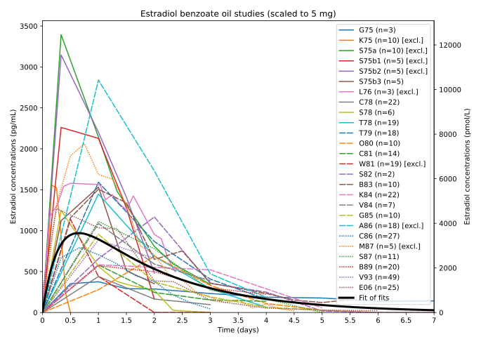 |
|---|
| Figure 1: Published estradiol concentration–time curves and fit of fit curves (thick black or white line) with a single intramuscular injection of estradiol benzoate in oil solution over a period of 7 days. Each curve was adjusted for endogenous estradiol levels, normalized to a dose of 5 mg, and fit with a compartmental pharmacokinetic model. Following this, the combined fit curves of the individual studies were fit using the same pharmacokinetic model. The original data from the studies for estradiol benzoate are also provided elsewhere (Spreadsheet; Plotly). |
Estradiol Valerate
Studies with curve data on injectable estradiol valerate come from its use in menopausal hormone therapy and other therapeutic indications for estrogens, its use in combined injectable contraceptives, and use in scientific research. A total of 28 publications and concentration–time data for 309 individual injections were identified for estradiol valerate (Table 3).
Table 3: Studies of injectable estradiol valerate (Spreadsheet; Plotly):
| Study | na | Subjects | Dose | Reference(s) |
|---|---|---|---|---|
| S7175 | 12 | Premenopausal women with menstrual migraine (n=10) and amenorrheic/postmenopausal women with history of menstrual migraine (n=2) | 5–20 mg | Somerville (1971); Somerville (1972a); Somerville (1972b); Somerville (1972c); Somerville (1975) |
| G75 | 3 | Gonadectomized/postmenopausal women | 26.2 mg | Geppert (1975); Leyendecker et al. (1975) |
| V75a | 4 | Unknown/not described | 10 mg | Vermeulen (1975) |
| V75b | 2 | Unknown/not described | 4 mg | Vermeulen (1975) |
| O80 | 9 | Premenopausal women on a combined birth control pill | 5 mg | Oriowo et al. (1980) |
| R80 | 6 | Gonadectomized/postmenopausal women | 10 mg | Rauramo et al. (1980); Rauramo, Punnonen, & Grönroos (1981) |
| B82 | 10 | Normal premenopausal women with bromocriptine administration | 20 mg | Blackwell, Boots, & Potter (1982) |
| D83 | 3 | Normal postmenopausal women | 4 mg | Düsterberg, & Wendt (1983) |
| A85 | 7 | Normal premenopausal women | 5 mg | Aedo et al. (1985) |
| D85 | 2 | Gonadectomized/postmenopausal women | 4 mg | Düsterberg & Nishino (1982); Düsterberg, Schmidt-Gollwitzer, & Hümpel (1985) |
| R87 | 7 | Normal young men | 10 mg | Reimann et al. (1987) |
| S87a | 8 | Normal premenopausal women | 5 mg | Sang et al. (1987) |
| S87b | 8 | Normal premenopausal women | 2.5 mg | Sang et al. (1987) |
| S87c | 20 | Gonadectomized/postmenopausal women | 10 mg | Sherwin et al. (1987); Sherwin (1988) |
| G88 | 54 | Normally cycling transmasculine people not on hormone therapy (n=31), transfeminine people not on hormone therapy (n=14), and gonadally intact transfeminine people on oral estrogen therapy (n=9) | 10 mg | Goh & Ratnam (1988) |
| G90 | 12 | Normally cycling transmasculine people not on hormone therapy | 10 mg | Goh & Ratnam (1990) |
| G94a | 8 | Normal premenopausal women | 5 mg | Garza-Flores (1994) |
| G94c | 5 | Normal premenopausal women | 5 mg | Garza-Flores (1994) |
| J94 | 9 | Normal young men | 10 mg | Jilma et al. (1994) |
| G98 | 5 | Men with Klinfelter’s syndrome | 10 mg | Goh & Lee (1998) |
| G02 | 17 | Normal postmenopausal women | 5 mg | Göretzlehner et al. (2002) |
| K06 | 10 | Normal menopausal women | 2 mg | Kerdelhué et al. (2006) |
| V11 | 32 | Normal young men | 5 mg | Valle Alvarez (2011) |
| S12 | 48 | Normal postmenopausal women (n=24) given Estradiol-Depot 10 mg and then Progynon Depot-10 (2 injections per subject) | 10 mg | Schug, Donath, & Blume (2012) |
a Total number of injections, not total number of subjects.
A few of these studies were excluded from fitting due generally to much higher or lower area-under-the-curve levels than average or due to being Cmax data. One study was omitted as it only reported estrone levels rather than estradiol levels (Ibrahim, 1996). Another study was not included due to being in pregnant women with concomitant pregnancy termination (Garner & Armstrong, 1977). One last study was omitted due partly to being very old and using very early and inaccurate blood tests (Ittrich & Pots, 1965 [Graph]). The processed original data and fit curve for estradiol valerate are shown in Figure 2.
| 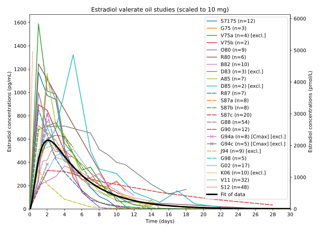 |
|---|
| Figure 2: Published estradiol concentration–time curves and fit curve (thick black or white line) with a single intramuscular injection of estradiol valerate in oil solution over a period of 30 days. Curves were adjusted for endogenous estradiol levels, normalized to a dose of 10 mg, and fit with a compartmental pharmacokinetic model. Fitting of the combined fits of individual studies for this preparation was explored but gave a nearly identical overall curve, so the overall fit curve for the combined processed original data was used for simplicity for this preparation. The original data from the studies for estradiol valerate are also provided elsewhere (Spreadsheet; Plotly). |
Estradiol Cypionate Oil
Estradiol cypionate in oil is used in menopausal hormone therapy and for other estrogen indications. However, its use has been more limited relative to other injectable estradiol preparations, like estradiol valerate. Only a handful of studies with relevant data were identified for estradiol cypionate in oil. This included 4 publications and estradiol concentration–time data for 49 individual injections (Table 4).
Table 4: Studies of injectable estradiol cypionate in oil (Spreadsheet; Plotly):
| Study | na | Subjects | Dose | Reference(s) |
|---|---|---|---|---|
| R73 | 6 | Hypogonadal adolescent girls | 1–2 mg | Rosenfield et al. (1973); Rosenfield & Fang (1974) |
| B80 | ~5 | Normal premenopausal women | 10 mg | Buckman et al. (1980) |
| O80 | 10 | Premenopausal women on a combined birth control pill | 5 mg | Oriowo et al. (1980) |
| L96 | 28 | Postmenopausal women with history of hormonal migraine (n=16) and without (n=12) initially on oral estrogen therapy (discontinued upon injection) | 5 mg | Lichten et al. (1996) |
a Total number of injections, not total number of subjects.
No curves were excluded from fitting in the case of this preparation. The processed original data and fit of fit curves for estradiol cypionate in oil are shown in Figure 3.
| 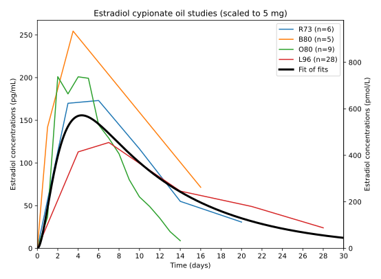 |
|---|
| Figure 3: Published estradiol concentration–time curves and fit of fit curves (thick black or white line) with a single intramuscular injection of estradiol cypionate in oil solution over a period of 30 days. Each curve was adjusted for endogenous estradiol levels, normalized to a dose of 5 mg, and fit with a compartmental pharmacokinetic model. Following this, the combined fit curves of the individual studies were fit using the same pharmacokinetic model. The original data from the studies for estradiol cypionate in oil are also provided elsewhere (Spreadsheet; Plotly). |
Estradiol Cypionate Suspension
Estradiol cypionate suspension has been used exclusively in combined injectable contraceptives. For this reason, many relatively high quality pharmacokinetic studies with this injectable preparation have been conducted. A total of 9 publications and estradiol concentration–time data for 131 individual injections were identified for estradiol cypionate suspension (Table 5).
Table 5: Studies of injectable estradiol cypionate suspension (Spreadsheet; Plotly):
| Study | na | Subjects | Dose | Reference(s) |
|---|---|---|---|---|
| F82 | 11 | Normal premenopausal women | 5 mg | Fotherby et al. (1982) |
| A85 | 8 | Normal premenopausal women | 5 mg | Aedo et al. (1985) |
| G87a | 7 | Normal premenopausal women | 5 mg | Garza-Flores et al. (1987); Garza-Flores (1994) |
| G87b | 8 | Normal premenopausal women | 5 mg | Garza-Flores et al. (1987); Garza-Flores (1994) |
| G87c | 7 | Normal premenopausal women | 5 mg | Garza-Flores et al. (1987); Garza-Flores (1994) |
| G87d | 8 | Normal premenopausal women | 2.5 mg | Garza-Flores et al. (1987); Garza-Flores (1994) |
| G87e | 8 | Normal premenopausal women | 2.5 mg | Garza-Flores et al. (1987); Garza-Flores (1994) |
| G87f | 6 | Normal premenopausal women | 2.5 mg | Garza-Flores et al. (1987); Garza-Flores (1994) |
| Z98 | 9 | Normal premenopausal women | 5 mg | Zhou et al. (1998) |
| R99 | 14 | Healthy surgically sterile premenopausal women | 5 mg | Rahimy & Ryan (1999); Rahimy, Ryan, & Hopkins (1999) |
| S11a | 15 | Normal premenopausal women | 5 mg | Sierra-Ramírez et al. (2011) |
| S11bb | 15 | Normal premenopausal women | 5 mg | Sierra-Ramírez et al. (2011) |
| T13 | 15 | Normal premenopausal women | 5 mg | Thurman et al. (2013) |
a Total number of injections, not total number of subjects. b By subcutaneous injection rather than intramuscular injection.
One of these studies used subcutaneous injection instead of the usual intramuscular injection but the resulting curve was very similar to the curve for intramuscular injection in the same study (Sierra-Ramírez et al., 2011 [Graph]). Several Cmax studies were excluded from fitting for this preparation. One pharmacokinetic study only measured estradiol cypionate levels rather than estradiol levels and hence was not included (Martins et al., 2019 [Graph]). The processed original data and fit of fit curves for estradiol cypionate suspension are shown in Figure 4.
{kind=link}
{kind=link}
| 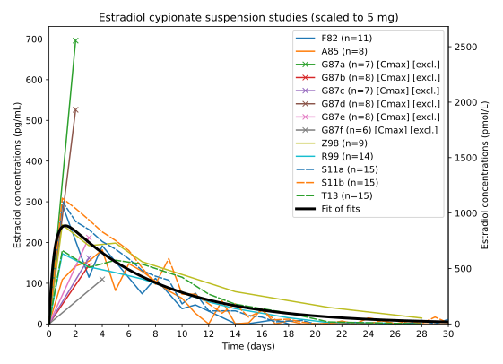 |
|---|
| Figure 4: Published estradiol concentration–time curves and fit of fits curve (thick black or white line) with a single intramuscular (or in one case subcutaneous) injection of a microcrystalline aqueous suspension of estradiol cypionate over a period of 30 days. Each curve was adjusted for endogenous estradiol levels, normalized to a dose of 5 mg, and fit with a compartmental pharmacokinetic model. Following this, the combined fit curves of the individual studies were fit using the same pharmacokinetic model. The original data from the studies for estradiol cypionate suspension are also provided elsewhere (Spreadsheet; Plotly). |
Estradiol Enanthate
Estradiol enanthate has been used exclusively in combined injectable contraceptives. Several pharmacokinetic studies have been conducted with it because of this. A total of 7 publications and concentration–time data for 270 individual injections were identified for estradiol enanthate (Table 6).
Table 6: Studies of injectable estradiol enanthate (Spreadsheet; Plotly):
| Study | na | Subjects | Dose | Reference(s) |
|---|---|---|---|---|
| R86a | 1 | Normal premenopausal woman | 5 mg | Recio et al. (1986) |
| R86b | 1 | Normal premenopausal woman | 10 mg | Recio et al. (1986) |
| W86 | 3 | Normal postmenopausal women | 10 mg | Wiemeyer et al. (1986); Wiemeyer et al. (1987) |
| S88 | 14 | Normal premenopausal women | 10 mg | Schiavon et al. (1988) |
| G89 | 10 | Normal premenopausal women | 10 mg | Garza-Flores et al. (1989) |
| G94a | 9 | Normal premenopausal women | 10 mg | Garza-Flores (1994) |
| G94b | 9 | Normal premenopausal women | 5 mg | Garza-Flores (1994) |
| G94c | 7 | Normal premenopausal women | 10 mg | Garza-Flores (1994) |
| M95 | 216 | Normal premenopausal women | 10 mg | Martinez (1995) |
a Total number of injections, not total number of subjects.
Of the available data, 216 of the injections were from a single study and mainly included only Cmax levels. Wiemeyer et al. (1986) was excluded from fitting due to having unusually high area-under-the-curve levels with a small sample size (n=3). Because of the scarcity of estradiol concentration–time data available for estradiol enanthate, Cmax studies were included in the fitting for this preparation. The processed original data and fit curve for estradiol enanthate are shown in Figure 5.
| 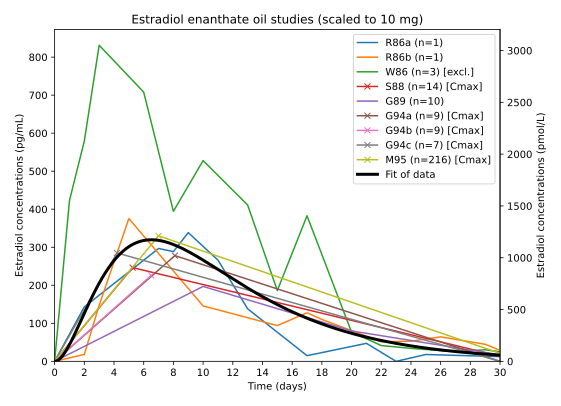 |
|---|
| Figure 5: Published estradiol concentration–time curves and fit curve (thick black or white line) with a single intramuscular injection of estradiol enanthate in oil solution over a period of 30 days. Curves were adjusted for endogenous estradiol levels, normalized to a dose of 10 mg, and fit with a compartmental pharmacokinetic model. The original data from the studies for estradiol enanthate are also provided elsewhere (Spreadsheet; Plotly). |
Estradiol Undecylate
Estradiol undecylate was formerly used in the treatment of prostate cancer and in menopausal hormone therapy as well as for other estrogen therapeutic indications. However, it was discontinued many years ago and is no longer used today. Nonetheless, estradiol undecylate is of significant historical interest as an injectable estradiol preparation. A total of 4 publications and estradiol concentration–time data for 7 individual injections were identified for estradiol undecylate (Table 7).
Table 7: Studies of injectable estradiol undecylate (Spreadsheet; Plotly):
| Study | na | Subjects | Dose | Reference(s) |
|---|---|---|---|---|
| G75 | 3 | Gonadectomized/postmenopausal women | 32.3 mg | Geppert (1975)/Leyendecker et al. (1975) [Graph] |
| V75 | 4 | Unknown/not described | 100 mg | Vermeulen (1975)/Vermeulen (1977) [Graph] |
{kind=link}
{kind=link}
a Total number of injections, not total number of subjects.
Unfortunately, the identified data were of very low quality, with small sample sizes and considerable variations in estradiol levels. Moreover, estradiol undecylate is a very long-acting injectable estradiol ester with a duration measured in months, and the follow up in these studies only went to about 2 weeks post-injection. For these reasons, it was not possible to fit the data for estradiol undecylate in a reasonably accurate way—as suggested by area-under-the-curve estradiol levels that were only around one-third those of the other non-polymeric injectable estradiol esters. Limited multi-dose hormone concentration–time data also exist for estradiol undecylate, but these data could not be incorporated (Jacobi & Altwein, 1979 [Graph]; Jacobi et al., 1980 [Graph]; Derra, 1981 [Graph]). The processed original data and fit curve for estradiol undecylate are shown in Figure 6.
{kind=link}
{kind=link}
| 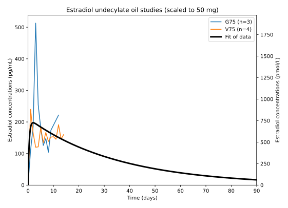 |
|---|
| Figure 6: Published estradiol concentration–time curves and fit curve (thick black or white line) with a single intramuscular injection of estradiol undecylate in oil solution over a period of 90 days. Curves were adjusted for endogenous estradiol levels, normalized to a dose of 50 mg, and fit with a compartmental pharmacokinetic model. The original data from the studies for estradiol undecylate are also provided elsewhere (Spreadsheet; Plotly). |
Polyestradiol Phosphate
Polyestradiol phosphate has been used primarily in the treatment of prostate cancer but has also been used for estrogen therapeutic indications like treatment of breast cancer and menopausal hormone therapy. While this injectable estradiol preparation has been used widely in the past, it appears to have recently been discontinued. All of the identified studies with estradiol concentration–time data on polyestradiol phosphate were in men with prostate cancer. A total of 11 publications and concentration–time data for 114 individual injections were identified for polyestradiol phosphate (Table 8).
Table 8: Studies of injectable polyestradiol phosphate (Spreadsheet; Plotly):
| Study | na | Subjects | Dose | Reference(s) |
|---|---|---|---|---|
| J76 | 16 | Men with prostate cancer | 160 mg | Jönsson (1976) |
| L79 | 10 | Men with prostate cancer | 80 mg | Leinonen et al. (1979) |
| L80 | 8 | Men with prostate cancer | 80 mg | Leinonen (1980) |
| J82 | 4 | Men with prostate cancer | 80 mg | Jacobi (1982) |
| N87a | 3 | Men with prostate cancer | 80 mg | Norlén (1987); Gunnarsson & Norlén (1988) |
| N87b | 3 | Men with prostate cancer | 160 mg | Norlén (1987); Gunnarsson & Norlén (1988) |
| N87c | 3 | Men with prostate cancer | 240 mg | Norlén (1987); Gunnarsson & Norlén (1988) |
| N87d | 4 | Men with prostate cancer | 80 mg | Norlén (1987); Gunnarsson & Norlén (1988) |
| N87e | 4 | Men with prostate cancer | 160 mg | Norlén (1987); Gunnarsson & Norlén (1988) |
| N87f | 4 | Men with prostate cancer | 240 mg | Norlén (1987); Gunnarsson & Norlén (1988) |
| S88a | 9 | Men with prostate cancer | 160 mg | Stege et al. (1988); Stege et al. (1989) |
| S88b | 9 | Men with prostate cancer | 240 mg | Stege et al. (1988); Stege et al. (1989) |
| S88c | 9 | Men with prostate cancer | 320 mg | Stege et al. (1988); Stege et al. (1989) |
| S96 | 11 | Men with prostate cancer | 320 mg | Stege et al. (1996) |
| H99 | 17 | Men with prostate cancer | 240 mg | Henriksson et al. (1999); Johansson & Gunnarsson (2000) |
a Total number of injections, not total number of subjects.
A few older and strongly outlying studies were excluded from the fitting. The processed original data and fit curve for polyestradiol phosphate are shown in Figure 7.
| 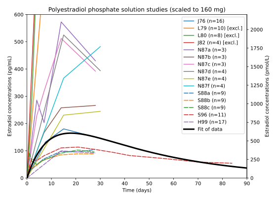 |
|---|
| Figure 7: Published estradiol concentration–time curves and fit curve (thick black or white line) with a single intramuscular injection of an aqueous solution of polyestradiol phosphate over a period of 90 days. The graph was clipped to maximum estradiol levels of 600 pg/mL (~2,200 pmol/L) for better viewability. Curves were adjusted for endogenous estradiol levels, normalized to a dose of 160 mg, and fit with a compartmental pharmacokinetic model. The original data from the studies for polyestradiol phosphate are also provided elsewhere (Spreadsheet; Plotly). |
Other Injectable Estradiol Preparations
A number of clinical studies with estradiol concentration–time data for other injectable estradiol preparations were also identified during literature search:
- Estradiol (unesterified) in oil (Ittrich & Pots, 1965 [Graph])
- Estradiol (unesterified) in an “aqueous” preparation (type of aqueous preparation unspecified but probably a microcrystalline aqueous suspension) (Jones et al., 1978 [Graph])
- Estradiol (unesterified) in different microsphere formulations (e.g., Juvenum-E) (Garza-Flores, 1994 [Graph]; Espino y Sosa et al., 2019 [Graph])
- Estradiol/progesterone in a macrocrystalline aqueous suspension (Garza-Flores et al., 1991)
- Estradiol/megestrol acetate in a microcrystalline aqueous suspension (Mego-E) (a lesser-known combined injectable contraceptive used in China) (Yan et al., 1987 [Graphs])
- Estradiol dipropionate in oil (Agofollin) (Presl et al., 1976 [Graph])
- Estradiol benzoate/estradiol phenylpropionate in oil (Dimenformon Prolongatum) (Rauramo et al., 1980; Rauramo, Punnonen, & Grönroos, 1981)
- Estradiol benzoate/estradiol phenylpropionate/testosterone propionate/testosterone phenylpropionate/testosterone isocaproate in oil (Estandron Prolongatum) (Vermeulen, 1975)
- Estradiol benzoate/estradiol dienanthate/testosterone enanthate benzilic acid hydrazone in oil (Climacteron) (Sherwin & Gelfand, 1987; Sherwin et al., 1987; Sherwin, 1988 [Graphs])
{kind=link}
{kind=link}
{kind=link}
These preparations were not included in the present meta-analysis due to their relative obscurity and the limited data available for them. In addition, there were concerns about fitting the used pharmacokinetic models to the formulations with multiple estradiol components and to the microsphere formulations.
No estradiol concentration–time data were identified for certain other injectable estradiol forms of interest, like unesterified estradiol in aqueous solution, estradiol benzoate as a microcrystalline aqueous suspension (Agofollin Depot; Ovocyclin M), or estradiol benzoate butyrate/dihydroxyprogesterone acetophenide in oil (Redimen, Soluna, Unijab) (another lesser-known combined injectable contraceptive).
All Injectable Estradiol Preparations Together
Figure 8 shows the curve fits for all of the injectable estradiol preparations scaled to a single dose of 5 mg (or equivalent) together in the same figure. The dose for polyestradiol phosphate was scaled to be about 6.5 times higher than the other injectable estradiol preparations in order to make it roughly equivalent to them in terms of total estradiol exposure. This was because polyestradiol phosphate was found to produce much lower area-under-the-curve estradiol levels than the other injectable estradiol preparations (see the Discussion section). Estradiol undecylate was not included in Figure 8 as a decent fit curve could not be obtained for it due to the very limited data available for this preparation.
| 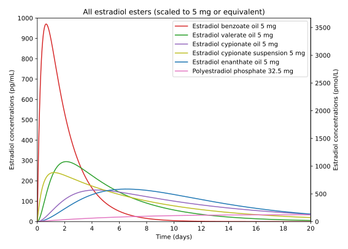 |
|---|
| Figure 8: Curve fits of published estradiol concentration–time data with different injectable estradiol preparations by intramuscular injection scaled to equivalent doses and plotted over a period of 20 days in a single combined graph. Polyestradiol phosphate is scaled to a 6.5-fold higher dose that is roughly equivalent to that for the other esters as it gave total estradiol levels that were around 6 or 7 times lower than the other esters at the same dose. An alternative version of this figure without estradiol benzoate and with the x-axis spanning 30 days is also provided (Graph). |
{kind=link}
Figure 9 shows simulated curves at steady state for repeated administration of all of the injectable estradiol preparations scaled to a dose of 5 mg (or equivalent) once every 7 days. As with the previous figure, the dose for polyestradiol phosphate was scaled to be about 6.5 times higher than the other injectable estradiol preparations and estradiol undecylate was not included in the figure.
| 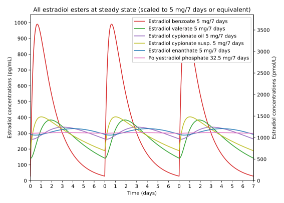 |
|---|
| Figure 9: Simulated curves at steady state for repeated administration of different injectable estradiol preparations by intramuscular injection scaled to equivalent doses and plotted over three injection cycles. This simulation was based on the fit curves of the published single-dose estradiol concentration–time data reported in this meta-analysis. Polyestradiol phosphate is scaled to a 6.5-fold higher dose that is roughly equivalent to that for the other esters as it gave total estradiol levels that were around 6 or 7 times lower than the other esters at the same dose. An alternative version of this figure without estradiol benzoate is also provided (Graph). |
{kind=link}
For more simulated estradiol concentration–time curves with repeated injections of these injectable estradiol preparations, please see the accompanying interactive web simulator.
Selected Pharmacokinetic Parameters
The table below shows selected pharmacokinetic parameters for the fit curves of the included injectable estradiol preparations (Table 9). Estradiol undecylate was not included in the table due to the lack of data needed to achieve a decent curve fit for this preparation and the uncertainty of its parameters.
Table 9: Selected pharmacokinetic parameters for estradiol with injectable estradiol preparations following a single 5 mg dose by intramuscular injection:
| Estradiol preparation | Tmax (d) | Cmax (pg/mL) | t1/2 (d) | t90% (d) | AUC0–∞ (pg•d/mL) |
|---|---|---|---|---|---|
| Estradiol benzoate in oil | 0.65 | 971 | 1.2 | 3.9 | 2410 |
| Estradiol valerate in oil | 2.1 | 295 | 3.0 | 9.9 | 1886 |
| Estradiol cypionate oil | 4.3 | 155 | 6.7 | 22.3 | 2150 |
| Estradiol cypionate suspension | 1.2 | 241 | 5.1 | 16.9 | 2096 |
| Estradiol enanthate in oil | 6.5 | 160 | 4.6 | 15.1 | 2183 |
| Polyestradiol phosphate a | 18.0 | 34 | 28.4 | 94.2 | 2117 |
a Scaled instead to a single 32.5 mg injection (6.5 times higher dose than with the other esters).
The table below shows selected pharmacokinetic parameters for simulated curves at steady state with repeated administration of the included injectable estradiol preparations (Table 10). As with the previous table, estradiol undecylate was not included.
Table 10: Selected pharmacokinetic parameters for estradiol with injectable estradiol preparations with simulated repeated administration of 5 mg once every 7 days by intramuscular injection:
| Estradiol preparation | Tmax (d) | Cmax (pg/mL) | Cmin (pg/mL) | Peak–trough diff. (pg/mL) | Peak–trough ratio | Cavg (pg/mL) |
|---|---|---|---|---|---|---|
| Estradiol benzoate in oil | 0.64 | 990 | 29 | 962 | 35 | 344 |
| Estradiol valerate in oil | 1.9 | 384 | 142 | 242 | 2.7 | 269 |
| Estradiol cypionate oil | 3.1 | 339 | 262 | 77 | 1.3 | 307 |
| Estradiol cypionate suspension | 1.0 | 404 | 189 | 214 | 2.1 | 299 |
| Estradiol enanthate in oil | 4.0 | 329 | 288 | 41 | 1.1 | 312 |
| Polyestradiol phosphate a | 3.2 | 304 | 299 | 5 | 1.0 | 302 |
a Scaled instead to repeated injections of 32.5 mg every 7 days (6.5 times higher dose than with the other esters).
Terminal half-life (t1/2) is the time for the concentration of estradiol to decrease by 50% after pseudo-equilibrium of distribution has been reached—not the time required for half of an administered dose of the estradiol ester to be eliminated (Toutain & Bousquet-Mélou, 2004). It is calculated using only the terminal portion of a concentration–time curve, without the absorption or distribution phases influencing it (Toutain & Bousquet-Mélou, 2004). Due to flip–flop kinetics with depot injectables and the very short blood half-life of estradiol (~0.5–2 hours), what is being described by the terminal half-life in the case of depot estradiol injectables is not actually elimination of estradiol from blood but rather is the absorption of estradiol from the injection-site depot (Toutain & Bousquet-Mélou, 2004; Yáñez et al., 2011).
Discussion
Data Quality, Limitations, and Variability Between Studies
The accuracies of the curve fits for the different included injectable estradiol preparations are limited by the available data for these preparations. The quantity and quality of data are variable among these preparations. In some cases, such as with estradiol valerate in oil and estradiol cypionate in suspension, the data are overall quite good. In other instances, such as with estradiol cypionate in oil and estradiol enanthate in oil, the available data are more limited. There was undersampling of certain parts of the concentration–time curve with some preparations, for instance estradiol benzoate in oil (the early curve), estradiol enanthate in oil (much of the curve), and polyestradiol phosphate (the late curve). In the case of estradiol undecylate in oil, the available data for this preparation weren’t adequate to achieve a decent curve fit at all. The fit curves and calculated pharmacokinetic parameters of the included injectable estradiol preparations should be interpreted with the imperfect data in mind. For example, the curve shapes and pharmacokinetic parameters for the different preparations should not be taken as precise determinations in most cases but instead as rough estimates that would no doubt change with more and better data. Indeed, the fits and pharmacokinetic parameters were often noticeably sensitive to the influences of individual studies. Modeling decisions, such as the choice of pharmacokinetic model, or whether to fit directly to the combined processed data versus to the fits of individual studies, also yielded significantly different curve fits as well as calculated pharmacokinetic parameters.
Due to scarcity of data for several injectable estradiol preparations, the study selection criteria maximized data inclusion in order to allow for better curve fits at the risk of including potentially less reliable data. As examples, studies were included regardless of the status of the HPG axis of the participants, and Cmax data were included in the fitting if data were very limited. In the case of HPG axis state, studies with cycling women may result in greater error due to more variable levels of endogenous estradiol. Moreover, acute high levels of estradiol can induce a surge in luteinizing hormone levels after several days in gonadally intact women, and this may cause a delayed bump in estradiol levels (Wiki). One of the more overt instances of this can be seen in a study of estradiol benzoate in such women (Shaw, 1978 [Graph]). Many if not most of the included studies with estradiol benzoate involved women with intact HPG axes, whereas studies of this sort were uncommon with the other preparations. In the case of Cmax data, these data when Cmax corresponds to the mean of individual peaks are a different type of data than the peak of the mean curve of all individuals. Cmax levels can differ in both magnitude and timing compared to the mean curve peak (e.g., Oriowo et al., 1980 [Graph]; Rahimy, Ryan, & Hopkins, 1999). This is because for instance not all individuals peak at the same time and this variability in time to peak normally serves to dilute peak levels for the mean curve when compared to individual maximal concentrations. However, Cmax levels are in any case generally in the vicinity of the mean curve peak. While Cmax levels were excluded in the fitting for most injectable estradiol preparations, they were included in the case of estradiol enanthate. This was because the available mean and individual estradiol curve data were very limited for this specific preparation, and inclusion of Cmax data allowed for improved fitting in spite of its limitations. Lastly, some of the included data was once-monthly multi-dose, and research with once-monthly estradiol enanthate-containing combined injectable contraceptives has found that the time to peak levels may shift with repeated long-term use (Schiavon et al., 1988; Garza-Flores, 1994).
{kind=link}
There was considerable variability between studies in terms of estradiol levels and concentration–time curve shapes with the same injectable estradiol preparation. The reasons for the large variability across studies are not fully clear. In any case, there are many potential factors that may contribute to this variability. These include preparation- and injection-related factors like formulation (e.g., oil vehicle, other components and excipients, concentration, particle size), injection volume, site of injection (e.g., buttocks, thigh, upper arm), injection technique (e.g., force of injection—and resulting depot droplet dimensions), and syringe dead space. They additionally include various subject- and research-related variables like differing blood-testing methodology, differing sample characteristics (e.g., age, weight, gender, ethnicity, physical activity, HPG axis state), and sampling error (Sinkula, 1978; Chien, 1981; Minto et al., 1997; Larsen & Larsen, 2009; Larsen et al., 2009; Florence, 2010; Larsen, Thing, & Larsen, 2012; Kalicharan, 2017). Older studies, which used potentially less accurate blood tests and tended to have smaller numbers of subjects, seemed to particularly add to the variability between studies. These studies may represent less reliable data than more recent research with larger sample sizes. The exclusion criteria helped to remove outliers for the different injectable estradiol preparations however. This meta-analysis does not take into account the potential factors underlying the variability between studies. To do so would be difficult, as in many cases information on these variables is not provided in individual studies and research quantifying their precise influences and relative importances is limited.
It is in any case known from other studies that different oil vehicles are absorbed at different rates from the injection site (Svendsen & Aaes‐Jørgensen, 1979; Schultz et al., 1998; Larsen et al., 2001) and can result in different concentration–time curve shapes (Ballard, 1978 [Excerpt]; Knudsen, Hansen, & Larsen, 1985). This is thought to be due to differences in oil lipophilicity and depot release rates. Viscosity of oils has also been hypothesized to potentially influence rate of depot escape (Schug, Donath, & Blume, 2012). However, research so far has not supported this hypothesis (Larsen & Larsen, 2009; Larsen, Thing, & Larsen, 2012). Oil vehicles can vary with injectable estradiol preparations even for the same estradiol ester. For instance, pharmaceutical estradiol valerate is formulated in sesame oil, castor oil, or sunflower oil depending on the preparation (Table). It is notable however that these three oils have similar lipophilicities (Table). On the other hand, homebrewed injectable estradiol preparations used by DIY transfeminine people often employ medium-chain triglyceride (MCT) oil as the oil vehicle. This oil (in the proprietary form of Viscoleo) has notably been found to be much more rapidly absorbed than conventional oils like sesame oil and castor oil in animals (Svendsen & Aaes‐Jørgensen, 1979; Schultz et al., 1998; Larsen et al., 2001). In addition, although based on very limited data, MCT oil has been found to give spikier and shorter-lasting depot injectable curves in humans (Knudsen, Hansen, & Larsen, 1985). As such, injectable estradiol preparations using MCT oil as the vehicle may have differing and less favorable concentration–time curve shapes than pharmaceutical injectable estradiol products. Other excipients, like benzyl alcohol, as well as factors like injection site and volume, have additionally been found to influence pharmacokinetic properties with depot injectables (Minto et al., 1997; Kalicharan, Schot, & Vromans, 2016). Excipients besides oil vehicle also vary by formulation (Table).
An implication of the variability between studies is that there is not a single estradiol concentration–time curve for a given injectable estradiol preparation but rather there are many, with these curves determined by variables such as formulation, dose/administration, and subject characteristics, among others. Hence, the curve fits determined in this meta-analysis represent only an estimation of the most typical and hence likely case, but the true curve for a preparation in a given context may be quite different.
Fitting all studies for a given injectable estradiol preparation individually first, and then fitting the fits of these studies, allowed for improved curve fits relative to directly fitting all of the combined processed original data for the preparation. The latter approach has limitations in that it has the effect of inherently weighting individual studies by quantity of time points (resulting in studies with greater time sampling having greater influence on the fit). Additionally, and more problematically, this approach can lead to distortions in curve shape due to different studies sampling different portions of the curve to differing extents in conjunction with systematic differences in curves between these studies. These are problems that fitting the fits of individual studies instead can solve. However, it is not possible to fit all individual studies, as some studies have limited time sampling and curve characterization which precludes fitting them appropriately. Cmax data are an example of this, which on their own cannot be fit properly. As such, it was not possible to fit the fits of the individual studies for all injectable estradiol preparations. Consequently, the fitting approach in this regard was not the same across esters, with some fit instead directly to the combined processed original data (e.g., estradiol enanthate, polyestradiol phosphate).
In spite of the various limitations of this work, aggregated analysis and modeling with injectable estradiol preparations has not previously been done. This informal meta-analysis provides among the most detailed insight into estradiol levels and curve shapes with these preparations available to date.
Durations and Curve Shapes
The curve shapes of non-polymeric injectable estradiol esters in oil relate strongly to lipophilicity. The more lipophilic the ester, the lower the peak levels and the more protracted the estradiol concentration–time curve. Accordingly, estradiol benzoate, one of the least lipophilic estradiol esters, has one of the spikiest curves and shortest durations, whereas more lipophilic estradiol esters, like estradiol cypionate in oil and estradiol enanthate, have comparatively flatter curves with delayed peaks and longer durations.
Duration of Estradiol Valerate
The estradiol concentration–time curve for injectable estradiol valerate in the well-known Oriowo et al. (1980) [Graph] study is notably spikier and shorter-lasting than the overall curve for estradiol valerate in this meta-analysis. On the other hand, the overall curve for injectable estradiol valerate in this meta-analysis was similar to (and considerably influenced by) the curves from several relatively recent and presumably better-quality studies of this injectable estradiol ester (e.g., Göretzlehner et al., 2002; Valle Alvarez, 2011; Schug, Donath, & Blume, 2012). It’s noteworthy that Oriowo et al. (1980) used a peanut oil-based formulation of estradiol valerate that differed from pharmaceutical injectable estradiol valerate preparations, which generally use sesame oil or castor oil as the carrier (as well as other excipients) (Table). This may have influenced the curve shape of estradiol valerate in Oriowo et al. (1980). The study also had a small sample size relative to the more recent studies (n=9 versus n=17, n=32, and n=24×2, respectively). Based on the newer and overall data, estradiol valerate appears to have a curve that is noticeably flatter and more prolonged than that suggested by Oriowo et al. (1980).
Duration of Estradiol Cypionate in Oil versus Estradiol Enanthate
Available estradiol concentration–time data for injectable estradiol cypionate in oil and estradiol enanthate in oil are more limited than with several of the other injectable estradiol preparations, and no direct comparisons of these two preparations exist at present. Based on some of the available literature on these injectable estradiol esters, most notably discussion by Oriowo et al. (1980) and a review of the pharmacokinetics of combined injectable contraceptives (Garza-Flores, 1994 [Graph]), it seemed that the duration of estradiol enanthate in oil was longer than that of estradiol cypionate in oil. However, this was based on limited research from separate and hence indirectly comparative studies of these esters. The estradiol cypionate in oil data from the relevant Garza-Flores (1994) figure was based on Oriowo et al. (1980) [Graph], and there are reasons to be cautious about relying on these data alone. The main concern is that curve shapes with the same injectable estradiol preparation can vary considerably across studies, as the present meta-analysis has shown. The reasons for this have yet to be fully clarified as already discussed, but among other factors may include varying formulations across studies of the same injectable estradiol ester. It is notable in this regard that Oriowo et al. (1980) used a formulation of estradiol cypionate that differs from conventional pharmaceutical estradiol cypionate in oil preparations—specifically, the study used a peanut oil-based formulation (with few other specifics) rather than the cottonseed oil-based preparation employed in marketed pharmaceutical formulations (Table). The study also had a somewhat small sample size (n=10) and may have had significant sampling error. Hence, single studies, perhaps particularly Oriowo et al. (1980), should be interpreted cautiously.
{kind=link}
A small but interesting pharmacokinetic study which directly compared injectable testosterone cypionate (n=6) and testosterone enanthate (n=6) both in oil is relevant to the topic in question. This study found that equivalent doses of these testosterone esters using otherwise identical formulations produced virtually identical testosterone concentration–time curves (Schulte-Beerbühl & Nieschlag, 1980 [Graph]). The findings of this study are consistent with the fact that the lipophilicities of testosterone cypionate and testosterone enanthate (as measured by predicted log P) are very similar when directly compared (e.g., 5.1 vs. 5.11 with ALOGPS, 6.29 vs. 6.11 with ChemAxon logP, and 6.4 vs. 6.3 with XLogP3, respectively (Table). This of course is of importance as lipophilicity is thought to be the key factor determining the release kinetics of oil-based depot injectables (Sinkula, 1978; Shah, 2007; Larsen & Larsen, 2009; Larsen, Thing, & Larsen, 2012; Shahiwala, Mehta, & Momin, 2018). Analogously similar lipophilicities can be seen when comparing estradiol cypionate and estradiol enanthate, which employ the same ester moieties (e.g., predicted log P values of 6.47 vs. 6.45 with ALOGPS and 7.1 vs. 7.0 with XLogP3, respectively) (Table). Hence, on a theoretical level, injectable estradiol cypionate and estradiol enanthate, like injectable testosterone cypionate and testosterone enanthate, might be expected to produce very similar curves—at least provided all other variables, such as formulation, are held constant.
{kind=link}
The present meta-analysis found that the overall estradiol curve for estradiol cypionate in oil was significantly less spikey and more prolonged than that observed in Oriowo et al. (1980). It is noteworthy in this regard that all of the other studies included for estradiol cypionate in oil specifically employed pharmaceutical Depo-Estradiol and that the overall curve for this preparation appears to be more consistent with its licensed injection interval for use in menopausal hormone therapy (1–5 mg once every 3–4 weeks) (Depo-Estradiol Label). Moreover, this meta-analysis found that injectable estradiol cypionate in oil and estradiol enanthate in oil had fairly similar and comparably flat and prolonged estradiol concentration–time curves. However, estradiol cypionate in oil appeared to peak earlier than estradiol enanthate, while estradiol enanthate was eliminated more rapidly than estradiol cypionate in oil in the terminal portion of the curve. In any case, the available concentration–time data for these preparations are limited, and the present work is not able to determine whether these estradiol esters have truly differing pharmacokinetic properties, as the apparent differences between the curves for these preparations may simply be due to statistical error. Taken together, estradiol cypionate in oil may have a less spikey and longer-lasting curve than that implied by Oriowo et al. (1980), and estradiol cypionate in oil and estradiol enanthate may have more similar curves than has been previously assumed.
Curve Shape of Estradiol Cypionate Suspension
While estradiol cypionate as an aqueous suspension is a relatively long-lasting injectable estradiol preparation similarly to estradiol cypionate in oil and estradiol enanthate in oil, it seems to differ in the shape of its estradiol concentration–time curve from these preparations. Estradiol cypionate as a suspension has a curve that appears to peak significantly earlier than estradiol cypionate in oil and other longer-acting oil-based injectable estradiol preparations. This might relate to the differing mechanisms of depot action and unique properties of injectable aqueous suspensions (Aly, 2019). In line with this notion, injectable medroxyprogesterone acetate suspension (Depo-Provera) also appears to peak rapidly despite having a very long duration (longer durations tending to be associated with delayed peaks in the case of oil-based depot injectables) (Graphs). Although aqueous suspensions generally last longer than oil solutions as injectables (Enever et al., 1983; Aly, 2019), this is not always the case, and estradiol cypionate suspension interestingly seems to be shorter-acting than estradiol cypionate in oil.
Estradiol Exposure and Potency
The average estradiol levels with the non-polymeric injectable estradiol esters when scaled to a dose and dosing interval of 5 mg every 7 days were around 300 pg/mL (~1,100 pmol/L). For comparison, in premenopausal cisgender women, estradiol production is on average about 200 μg/day (or 6 mg per month/cycle) and mean estradiol levels are around 100 pg/mL (~370 pmol/L) (Aly, 2019). After adjusting for the molecular weight of the ester, the estradiol levels for a given dose of non-polymeric injectable estradiol esters are in fairly close agreement with the estradiol levels for an equal quantity of estradiol produced endogenously by the ovaries in premenopausal cisgender women (very roughly around 1.2 mg estradiol per 7 days for injectable estradiol esters and 1.4 mg estradiol per 7 days for ovarian production to achieve average integrated estradiol levels of around 100 pg/mL). The preceding is in accordance with the fact that injectable estradiol valerate has been reported to have approximately 100% bioavailability (with this being less characterized but likely also the case for the other non-polymeric injectable estradiol esters) (Düsterberg & Nishino, 1982; Seibert & Günzel, 1994).
Although non-polymeric injectable estradiol esters have differing estradiol concentration–time curve shapes, they all appear to achieve fairly similar area-under-the-curve levels of estradiol when compared to one another. This is in accordance with the fact that differences in molecular weight and hence estradiol content with the different estradiol esters are fairly minor (all of the assessed non-polymeric esters range from 62 to 76% of that of estradiol in terms of estradiol content, and all but estradiol undecylate are in the range of 69 to 76%) (Table). The appearance of differences in area-under-the-curve levels of estradiol in the present meta-analysis is probably just due to statistical error, and true differences cannot be established by this meta-analysis. An implication of the similar area-under-the-curve estradiol levels with the different non-polymeric injectable estradiol esters is that these preparations can all be expected to deliver a roughly comparable amount of estradiol for the same dose.
On the other hand, the polymeric ester polyestradiol phosphate appears to produce around 6- to 7-fold lower area-under-the-curve and average estradiol levels than non-polymeric estradiol esters. This suggests that the estradiol in polyestradiol phosphate is not 100% bioavailable, and is supported by the fact that this ester is used clinically at substantially higher dosages than other injectable estradiol esters (40–320 mg/month), even for the same indications such as menopausal hormone therapy and treatment of prostate cancer (Wiki; Estradurin Labels). This does not seem to have been previously described in the literature, and the reasons for it are unknown. It seems possible that polyestradiol phosphate may be partially excreted before it can be cleaved into estradiol and thereby rendered partly inactive, in turn necessitating the use of higher doses to achieve the same estradiol levels and therapeutic effect.
Although two given injectable estradiol preparations may produce equivalent total estradiol levels, this does not necessarily mean that they will always have the same estrogenic potency (i.e., strength of effect at a given dose). It is plausible that spikier estradiol concentration–time curves, like with estradiol benzoate, may have overall lower estrogenic potency than more steady curves, like with estradiol enanthate. This is because estrogen receptors for a given tissue should become saturated at a certain point due to the finite quantity of available receptors in the tissue. As a result, high peak estradiol levels with spikier curves may effectively be “wasted” to varying extents in different tissues. On the other hand, more spikey estradiol curves, due to higher peak estradiol levels, might have greater influence on tissues that require high estradiol levels for effect such as the liver (and by extension on coagulation and associated health risks) (Aly, 2020). However, these possibilities are speculative and theoretical. Although some literature exists that is relevant to this issue (e.g., Parkes, 1937; Bradbury, Long, & Durham, 1953), there is very little research in this area. Consequently, it is not currently possible to take into account time-related variations in estradiol levels or differing estradiol curve shapes when assessing the comparative estrogenic potency between injectable estradiol preparations (or between other estradiol forms/routes). It is also noteworthy that these variations depend on injection interval and may be reduced with shorter injection intervals that maintain steadier estradiol levels, which must also be considered.
Variability Between Individuals
There is substantial variation in total estradiol levels and curve shapes between people with the same injectable estradiol preparation. Indicators of interindividual variability such as standard deviation or 95% range have not been included in this meta-analysis at this time due to the large amount of additional time and work this would require (e.g., additional extraction of error bars from all studies and analysis). In any case, individual studies that were included show this marked interindividual variation (e.g., Oriowo et al., 1980; Derra, 1981 [Graph]; Aedo et al., 1985 [Graphs]; Sang et al., 1987 [Graphs]; Rahimy & Ryan, 1999 [Graph]; Valle Alvarez, 2011 [Graph]; Schug, Donath, & Blume, 2012 [Graphs]). Highly variable estradiol levels are already well-established with oral and transdermal estradiol (Kuhl, 2005; Wiki). Less variability might be expected with non-polymeric injectable estradiol esters since these preparations appear to have approximately complete bioavailability. However, it seems that even with injectable forms of estradiol, the variability between people is still quite substantial. An implication of this is that the appropriate dose and dosing interval of an injectable estradiol formulation for a given person will vary considerably. This emphasizes the importance of blood work to ensure that injectable estradiol preparations are neither overdosed—which can increase health risks such as blood clots (Aly, 2020)—nor underdosed—which may result in suboptimal testosterone suppression and therapeutic efficacy.
{kind=link}
{kind=link}
Insights for Clinical Guidelines and Dosing Recommendations
Clinical guidelines for transgender health (see also Aly (2020)) provide recommendations on doses and dosing intervals of injectable estradiol valerate in oil and estradiol cypionate in oil (Table 11). Dosing recommendations are not given for other injectable estradiol preparations, which are much less commonly used in transgender medicine. The recommended doses for estradiol valerate and estradiol cypionate vary widely depending on the guidelines, whereas the recommended intervals are consistently once every 1 to 2 weeks. The doses for estradiol valerate range from 2 to 20 mg/week or 5 to 80 mg/2 weeks and the doses for estradiol cypionate range from <1 to 10 mg/week or <2 to 80 mg/2 weeks. For reference, the Endocrine Society guidelines and the University of California, San Francisco (UCSF) guidelines are the most major clinical guidelines for transgender hormone therapy at present (Aly, 2020). The Endocrine Society guidelines recommend 5 to 30 mg/2 weeks or 2 to 10 mg/week for either estradiol valerate or estradiol cypionate (Hembree et al., 2017). Conversely, the UCSF guidelines recommend <20 to 40 mg/2 weeks for estradiol valerate and <2 to 5 mg/2 weeks for estradiol cypionate (with the option to divide dose into weekly injections if cyclical side effects occur) (Deutsch, 2016a).
Table 11: Recommended doses and injection intervals of injectable estradiol preparations (specifically estradiol valerate and estradiol cypionate) in transgender medicine clinical guidelinesa:
| Guidelines | Ester(s) | Dose ranges and intervals |
|---|---|---|
| Endocrine Society / Hembree et al. (2017) | Estradiol valerate or cypionate | 5–30 mg/2 weeks or 2–10 mg/week i.m. |
| UCSF / Deutsch (2016b) | Estradiol valerate | Initial–low: <20 mg/2 weeks i.m. Initial: 20 mg/2 weeks i.m. Maximum: 40 mg/2 weeks i.m. Note: “May divide dose into weekly injections for cyclical symptoms” Note: Specifically for transfeminine adults |
| Estradiol cypionate | Initial–low: <2 mg/2 weeks i.m. Initial: 2 mg/2 weeks i.m. Maximum: 5 mg/2 weeks i.m. Note: “May divide dose into weekly injections for cyclical symptoms” Note: Specifically for transfeminine adults | |
| UCSF / Olson-Kennedy et al. (2016) | Estradiol valerate | 5–20 mg/2 weeks Maximum: 30–40 mg/2 weeks Note: Specifically for transfeminine youth |
| Estradiol cypionate | 2–10 mg/week Note: Specifically for transfeminine youth | |
| Fenway Health / Cavanaugh et al. (2015) | Estradiol valerate | Initial: 5–10 mg/week i.m. Usual: 20 mg/2 weeks i.m. Maximum: 40 mg/2 weeks i.m. |
| Estradiol cypionate | Initial: 2.5 mg/2 weeks i.m. Usual: 5 mg/2 weeks i.m. Maximum: 10 mg/2 weeks i.m. | |
| Callen-Lorde (2018) | Estradiol valerate | Initial: 10–20 mg/2 weeks Maximum: 20–40 mg/2 weeks |
| Estradiol cypionate | Initial: 2.5 mg/2 weeks Maximum: 5 mg/2 weeks | |
| Davidson et al. / Tom Waddell Health Center (2013) | Estradiol valerate or cypionate | Initial: 20–40 mg/2 weeks i.m. Average: 40 mg/2 weeks i.m. Maximum: 40–80 mg/2 weeks i.m. |
| Bourns / Sherbourne Health / Rainbow Health Ontario (2019) | Estradiol valerate | Initial: 3–4 mg/week or 6–8 mg/2 weeks Usual: Variable Maximum: 10 mg/week |
| Trans Care BC (2021) | Estradiol valerate | Initial: 5 mg/week i.m. or s.c. Usual: 10–20 mg/week i.m. or s.c. Every 2 weeks at 2x dose may be tolerated in some |
| Dahl et al. / Vancouver Coastal Health (2015) | Estradiol valerate | 20–40 mg/2 weeks i.m. Note: “Alternative estrogen therapy for 3–6 months only” |
| European Society for Sexual Medicine / T’Sjoen et al. (2020) | Estradiol valerate | 5–30 mg/1–2 weeks i.m. |
| Estradiol cypionate | 2–10 mg/week i.m. | |
| TransLine (2019) | Estradiol valerate | Initial/Usual: 5–10 mg/week Maximum: 20 mg/week |
| Estradiol cypionate | Initial/Usual: 1.25–2.5 mg/week Maximum: 5 mg/week |
a Several other guidelines recommend doses and intervals that appear to be taken directly from the Endocrine Society or UCSF guidelines and thus are not listed here but can be found elsewhere (Aly, 2020).
A number of concerns arise when the doses and intervals of injectable estradiol valerate and estradiol cypionate recommended by the major transgender clinical guidelines are considered in the context of the present informal meta-analysis and when they are compared between guidelines. Based on the present work, dosages of injectable preparations recommended by the major transgender clinical guidelines appear to result in estradiol exposure that is markedly higher than that with the recommended dosages for other routes and forms of estradiol (e.g., oral or transdermal). Whereas a dosage of 5 mg/week of any non-polymeric injectable estradiol ester appears to give average estradiol levels of around 300 pg/mL (~1,100 pmol/L), which are already supraphysiological, doses of injectable estradiol valerate or estradiol cypionate recommended by guidelines are as high as 15 to 20 mg per week. The average estradiol concentrations that would be expected to result from such doses per this meta-analysis (e.g., ~600–1,200 pg/mL or 2,200–4,400 pmol/L at 10–20 mg/week) (Figure 10) would vastly exceed the ranges for estradiol levels in transfeminine people advised by the same guidelines (generally about 50–200 pg/mL or ~180–730 pmol/L) (Table). This is not merely theoretical; for example, a study that used 40 mg/week estradiol valerate by intramuscular injection in cisgender women with estrogen deficiency to produce “pseudopregnancy” reported measured estradiol levels of about 2,500 pg/mL (~9,200 pmol/L) at 3 months and 3,100 pg/mL (~11,400 pmol/L) at 6 months of treatment (Ulrich, Pfeifer, & Lauritzen, 1994). Moreover, highly supraphysiological estradiol levels with guideline-based injectable estradiol doses are not unexpected when normal production of estradiol in premenopausal cisgender women is considered (~1.4 mg per week or 6 mg per month/cycle giving mean estradiol levels of ~100 pg/mL or 370 pmol/L) (Aly, 2019). Clinical safety data on high doses of injectable estradiol esters like estradiol valerate and estradiol cypionate are lacking at present, but excessive estrogenic exposure is known to increase the risk of health complications such as blood clots (Aly, 2020). The very high doses of these preparations that are recommended by guidelines should raise considerable reservations about their safety.
| 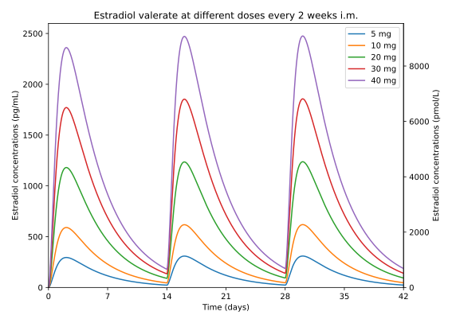 |
|---|
| Figure 10: Simulated estradiol levels with injectable estradiol valerate at the doses and interval (5–40 mg/2 weeks) preferentially recommended by current major transgender care guidelines. Steady-state estradiol levels are reached by about the second or third injection with this injection interval and levels do not further accumulate. An alternative version of this figure with half-doses at a once-weekly interval (i.e., 2.5–20 mg/week) is also provided (Graph). |
{kind=link}
The present author elsewhere has listed doses of injectable estradiol preparations that are roughly comparable in terms of total estradiol exposure to doses for other estradiol forms and routes used in transfeminine people (Aly, 2020). These doses range from about 1 to 6 mg per week for “low dose” to “very high dose” therapy with non-polymeric injectable estradiol esters (Graph). This dose range for injectable estradiol is likely to be more appropriate for use in transfeminine people than current recommendations by many guidelines. Although high estradiol levels can be useful in transfeminine hormone therapy when antiandrogens are not used due to their greater efficacy than physiological levels in terms of testosterone suppression, only modestly supraphysiological estradiol levels (e.g., ~200–300 pg/mL or 730–1,100 pmol/L) appear to be required for strong testosterone suppression (Aly, 2019; Langley et al., 2021; Aly, 2020). In relation to this, doses of injectable estradiol need not be excessive.
{kind=link}
Some guidelines, such as the Endocrine Society guidelines, recommend the same doses and intervals for both estradiol valerate and estradiol cypionate, whereas other guidelines, such as the UCSF guidelines, recommend different doses for these two injectable estradiol esters. Concerningly, the doses for estradiol valerate and estradiol cypionate recommended by the UCSF guidelines differ by roughly an order of magnitude (<20 to 40 mg/2 weeks for estradiol valerate and <2 to 5 mg/2 weeks for estradiol cypionate). These estradiol esters appear to produce similar average estradiol levels (e.g., around 300 pg/mL or 1,100 pmol/L at a dosage of 5 mg/week) and have concentration–time curve shapes that are not extremely different, with estradiol cypionate being only somewhat flatter and more prolonged than estradiol valerate. As such, it would appear that similar doses should be appropriate for these esters. This is supported by the fact that the same doses of estradiol valerate and estradiol cypionate are used in combined injectable contraceptives in cisgender women (both 5 mg once per month) and that these doses were carefully determined during an intensive clinical development programme for these preparations (Garza-Flores, 1994; Newton, d’Arcangues, & Hall, 1994; Sang, 1994; Toppozada, 1994). This programme notably included dose-ranging and direct-comparison studies. Based on the present analysis, the current recommendations by the UCSF guidelines may result in marked overdosage in the case of estradiol valerate and potential underdosage in the case of estradiol cypionate.
Transgender health guidelines recommend an injection interval for estradiol valerate and estradiol cypionate in oil of once every 1 to 2 weeks. Although an injection interval of 2 weeks seems technically feasible in the case of both of these preparations, such an interval would appear to result in substantial fluctuations in estradiol levels, with high peak levels and low troughs. This is particularly true in the case of the shorter-acting estradiol valerate (Figures 10, 11). Considering the wide fluctuations and unknown effects of this variability, as well as the fact that testosterone suppression when applicable may depend on sustained higher estradiol levels, it may be advisable that a once-weekly interval be preferentially recommended for these preparations. This would achieve steadier estradiol levels and would reduce potential problems due to high or low estradiol levels (Figure 11). Alternatively, a shorter interval of once every 5 days may be used with estradiol valerate to further reduce the variability in estradiol levels that occurs with this preparation (Figure 11). On the other hand, an injection interval of once every 10 days to 2 weeks may be practical and allowable in the case of the longer-acting estradiol cypionate in oil (as well as estradiol enanthate) (Figure 11)—provided that the injection cycles are well-tolerated and testosterone suppression remains adequate. When selecting different injection intervals, doses should be scaled by the interval to maintain equivalent total estradiol exposure (e.g., 3.5 mg/5 days, 5 mg/7 days, 7 mg/10 days, or 10 mg/14 days for high-dose non-polymeric injectable estradiol esters).
| 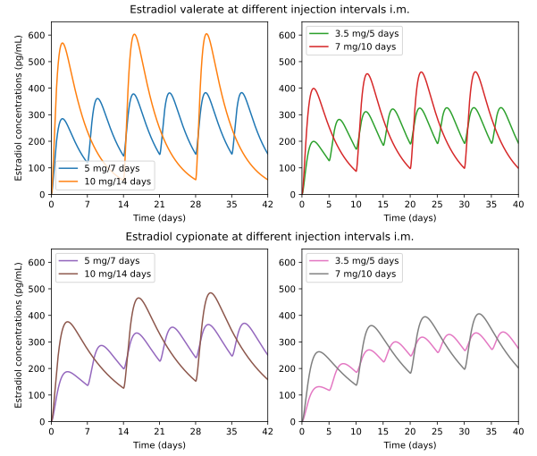 |
|---|
| Figure 11: Simulated estradiol levels with a high dosage of injectable estradiol valerate or estradiol cypionate in oil at different injection intervals (doses scaled by interval to be equivalent in total estradiol exposure). |
With the preceding concerns about the doses and intervals of injectable estradiol preparations recommended by transgender care guidelines considered, the question of how these recommendations were determined arises. Unfortunately, current guidelines do not generally describe how they arrived at their recommendations nor do they usually cite sources to support them. It is notable that the UCSF guidelines recommend doses and intervals for injectable estradiol preparations that are nearly identical to those advised by Christian Hamburger and Harry Benjamin in the late 1960s in the first medical textbook on transgender people (Hamburger & Benjamin, 1969). These authors recommended a dose of 10–40 mg/2 weeks for estradiol valerate and of 2–5 mg/2 weeks for estradiol cypionate (although Benjamin additionally stated that after 4–8 months, the same doses could be used at a longer injection interval of once every 4 weeks). These recommendations were notably made before estradiol blood tests became practicably available and were prior to the advent of modern pharmacokinetic studies. Hence, the recommendations for at least these guidelines appear to be based mainly on past expert opinion and long-standing historical precedent rather than on pharmacokinetic or clinical data. The same is likely to also be true for most other guidelines. High doses with certain injectable estradiol preparations (namely estradiol valerate) were probably originally employed for the purpose of achieving longer durations and more convenient injection intervals. This was notably prior to the risks of excessive estrogenic exposure like blood clots becoming known, and these doses may simply have never been revised.
The reasons that dose recommendations for injectable estradiol in transfeminine people have remained as they have for so long may be related to several factors. These include (1) a long-standing lack of research and funding in transgender health; (2) injectable estradiol not being widely available or as commonly used as other forms of estradiol; and (3) many clinicians only testing estradiol levels at trough (right before the next injection) with injectable estradiol preparations (e.g., Mueller et al., 2011; Chantrapanichkul et al., 2021; Cirrincione et al., 2021). The latter point is noteworthy as trough levels only describe the lowest point of the estradiol concentration–time curve with injectable estradiol preparations, and can give a very misleading impression of average or total estradiol exposure. In any case, the very high estradiol levels with currently recommended doses of injectable estradiol forms for transfeminine people have not gone unnoticed in the literature (e.g., Gooren, 2005; Spack, 2013; Deutsch, 2014; Glintborg et al., 2021; Tassinari & Maranghi, 2021; Le, Huang, & Cirrincione, 2022). Additionally, studies in transfeminine people have reported high to very high estradiol levels with typical clinical doses of injectable estradiol (e.g., Futterweit, Gabrilove, & Smith, 1984 [Figure]; Kronawitter et al., 2009 [Table]; Mueller et al., 2011 [Table]; Sharula et al., 2012 [Data]; Nelson et al., 2016 [Table]; LaBudde, Craig, & Spratt, 2020; Chantrapanichkul et al., 2021 [Table]; Cirrincione et al., 2021 [Table]).
Among the surveyed guidelines for transgender hormone therapy, only the UCSF guidelines (Deutsch, 2016b) and the Sherbourne Health/Rainbow Health Ontario guidelines (Bourns, 2019) referenced pharmacokinetic literature in their discussion of injectable estradiol. The specific publications cited by these guidelines were Düsterberg & Nishino (1982), Sierra-Ramírez et al. (2011), and Thurman et al. (2013). Although it is favorable to see guidelines considering published pharmacokinetic data for informing use of these preparations, there are a few concerns about the studies that were cited. Düsterberg & Nishino (1982) in its study of injectable estradiol valerate had a very small sample size (n=2), and this study was excluded as an outlier in the present meta-analysis due to unusually high estradiol levels. The findings of Düsterberg & Nishino (1982) also do not seem to have actually been used to guide dosing recommendations in the case of the UCSF guidelines, since if this were the case, the recommended doses should have been much lower. On the other hand, Bourns (2019) cited the same study and recommended injectable estradiol valerate at doses of 3–4 mg/week or 6–8 mg/2 weeks. These doses are well below those recommended by other transgender care guidelines and appear to be more appropriate for use in transfeminine people in light of the present meta-analysis. Sierra-Ramírez et al. (2011) and Thurman et al. (2013), although better-quality studies than Düsterberg & Nishino (1982), described injectable estradiol cypionate suspension rather than estradiol cypionate in oil. The oil-based version of estradiol cypionate is the form normally used in transfeminine hormone therapy, and there are important differences between these estradiol cypionate preparations such that pharmacokinetic studies for the suspension can’t necessarily be generalized to the oil solution. These preparations do in any case produce similar total estradiol levels however and hence doses should be comparable for them.
This meta-analysis is only informal and unpublished research. Nonetheless, based on the results of this work and the preceding discussion, current dosing recommendations for injectable estradiol preparations by most transgender clinical guidelines appear to be highly excessive and likely unsafe, with injection intervals that may additionally be too widely spaced. Transgender care guidelines should consider reassessing these recommendations, and the transgender medical community should make an effort to better characterize the pharmacokinetics and optimal dosing schemes of injectable estradiol preparations in transfeminine people in the future. Since clinical data on these preparations are scarce and will probably remain so in the near-term, use of published pharmacokinetic data may be further considered for guiding dosing recommendations for injectable estradiol. As identified and catalogued by this meta-analysis, there is a wealth of existing data that could be used to better inform transgender care guidelines in terms of the use of injectable estradiol preparations in transfeminine people.
Interactive Web Simulator
This informal meta-analysis of estradiol concentration–time data with injectable estradiol preparations was conducted for the purpose of deriving accurate and representative estradiol curves for incorporation into a web-based injectable estradiol simulator intended for use by transfeminine people and their clinicians. This web app is able to simulate both single-injection curves and repeated-injection curves with these preparations. An informational page for this simulator can be found at the following location:
And the injectable estradiol simulator itself can be found at the following page:
Future Possibilities
There are various possibilities for further work on this project in the future. For example, assessment of interindividual variability for estradiol levels with injectable estradiol preparations could be included in the meta-analysis. As another example, it would be fairly straightforward and valuable to expand the meta-analysis as well as simulator to other hormonal preparations such as injectable testosterone preparations and other estradiol routes and forms like oral estradiol, sublingual estradiol, and estradiol pellets. Pharmacokinetic literature for some of these preparations has already been collected by this author. However, these future possibilities would require much additional time and effort to complete.
Special Thanks
A special thank you to Violet and Lila for their indispensable input and guidance on modeling topics during the work on this project. An additional thanks to Violet for deriving a special three-compartment pharmacokinetic model that was used in this work. Please also check out Violet’s own projects Tilia—an effort to empower trans people with tools to manage their hormonal transitions—and TransKit—a work-in-progress pharmacokinetic simulation library specifically tailored for transgender hormone therapy. Lastly, thank you to all the peer reviewers who carefully reviewed this article prior to it being posted.
Updates
Update 1: WPATH SOC8 Guidelines
In September 2022, the World Professional Association for Transgender Health (WPATH) Standards of Care for the Health of Transgender and Gender Diverse People Version 8 (SOC8) were published and made recommendations on transgender hormone therapy for the first time (Coleman et al., 2022). These guidelines are among the most highly regarded and consulted transgender care guidelines. In terms of the recommended doses of hormonal medications for transgender people, the WPATH SOC8 appear to have largely copied the Endocrine Society’s 2017 guidelines on transgender hormone therapy (Hembree et al., 2017). More specifically, in the case of injectable estradiol preparations for transfeminine people, doses of 5–30 mg/2 weeks or 2–10 mg/week estradiol valerate or estradiol cypionate were recommended. There was no discussion of injectable estradiol in the guidelines besides the preceding doses and intervals being included in a table, and no literature citations were included to support these doses. As described in the present work, these recommendations include doses and intervals that appear to be highly excessive, too widely spaced, and are likely unsafe. As such, major transgender care guidelines unfortunately continue to make uncited recommendations for injectable estradiol that are out of step with insights available from abundant published pharmacokinetic data. These recommendations are likely inadvisable, with the possibility of substantial health risks.
Update 2: Literature Mentions
The following publications in the literature have cited or mentioned Transfeminine Science’s injectable estradiol simulator and/or meta-analysis since the project was published in mid-2021:
Hughes et al. (2022)
Hughes, J. H., Woo, K. H., Keizer, R. J., & Goswami, S. (2022). Clinical Decision Support for Precision Dosing: Opportunities for Enhanced Equity and Inclusion in Health Care. Clinical Pharmacology & Therapeutics, 113(3), 565–574. [DOI:10.1002/cpt.2799]:
Lastly, we recommend that developers of [clinical decision support software (CDSS)] for dosing take an iterative and participatory approach to designing systems. By involving stakeholders in the design process, they will develop solutions that best suit users’ needs and are more likely to be adopted and used correctly. This participatory approach should involve interviews and usability testing with clinicians. Formal usability testing and analysis with real end users can improve the quality and usefulness of a system.88 Though patients themselves are not typically the end users of CDSS, their expertise (especially that of marginalized groups and organized patient advocacy organizations) can also inform CDSS developers. As an example, transgender people have compiled their own resources to understanding dosing regimens in the absence of clear clinical guidelines.89 Developers of CDSS could provide a great deal of value to these patient populations, and improve their software’s utility, by working with them to understand their needs from a dosing tool.
89. Aly, W. An interactive web simulator for estradiol levels with injectable estradiol esters. Transfeminine Science <https://transfemscience.org/articles/injectable-e2-simulator-release/> (2021) Accessed November 1, 2022.
Jaafar et al. (2022)
Jaafar, S., Torres-Leguizamon, M., Duplessy, C., & Stambolis-Ruhstorfer, M. (2022). Hormonothérapie injectable et réduction des risques: pratiques, difficultés, santé des personnes trans en France. [Hormone replacement therapy injections and harm reduction: practices, difficulties, and transgender people’s health in France.] Sante Publique, 34(HS2), 109–122. [Google Scholar] [PubMed] [DOI:10.3917/spub.hs2.0109] [Translated]:
With regard to feminizing [substitutive hormone therapy (HS)], there are no specialty injectables based on estrogens in the French pharmacopoeia. This makes it impossible to set up estrogen monotherapies which require high dosages that are more difficult to obtain with specialties with other galenic forms [5]. Faced with this lack of care, some trans women and transfeminine people obtain estradiol-based injectable solutions on the Internet or through other sources [6]. […]
5. Aly. An informal meta-analysis of estradiol curves with injectable estradiol preparations [Internet]. Transfem Sci. 2021 July 16. [Visited on 29/12/2022]. Online : https://transfemscience.org/articles/injectable-e2-meta-analysis/.
Linet (2023)
Linet, T. (2023). Prise en charge endocrinologique d’une personne trans. [Endocrinological care of a trans person.] In Faucher, P., Hassoun, D., & Linet, T. (Eds.). Santé sexuelle et reproductive des personnes LGBT [Sexual and Reproductive Health of LGBT People] (pp. 109–124). Issy-les-Moulineaux, France: Elsevier Masson. [Google Books] [URL] [WorldCat] [Excerpt] [Translated]:
Choice of estrogen.
Estradiol is generally the most prescribed estrogen. It is given orally or sublingually in transfeminine people with no significant cardiovascular risk factors. For others, the percutaneous form (patches, gel) is recommended.
The starting dose is 2 mg of estradiol orally with a step increase of 2 mg every 2 to 3 months until the optimal dose is reached [1]. For the patches, the initial dosage and the increments are 50 or 100 μg, and for the gel 2.5 g. This means that the optimal dose is generally 6 to 8 mg per day for the oral route, 3 to 4 mg for the sublingual route, and 300 to 400 μg for the patches (see table 11.1).
It may happen in consultation that the person does not wish to use the prescribed estrogens and wishes to continue the self-prescription of injectable estrogens. It is then possible to evaluate with them the most suitable dosage using the Transfem Science Injection Simulator (https://transfemscience.org/misc/injectable-e2-simulator/). Risk prevention related to injections (needles) can be done. Associations can help the person find 25 G needles of 40 mm useful this type of treatment.
Rothman et al. (2024)
Rothman, M. S., Ariel, D., Kelley, C., Hamnvik, O. R., Abramowitz, J., Irwig, M. S., Soe, K., Davidge-Pitts, C., Misakian, A. L., Safer, J. D., & Iwamoto, S. J. (2024). The Use of Injectable Estradiol in Transgender and Gender Diverse Adults: A Scoping Review of Dose and Serum Estradiol Levels. Endocrine Practice, ahead of print. [DOI:10.1016/j.eprac.2024.05.008]:
In recent years, we have noted trends in our clinical practices with TGD adults requesting injectable estradiol, particularly in the United States. The reasons given can vary; it may be due to ease of weekly or every two weeks administration, fatigue of taking daily oral medications and skin reactions to or cost of transdermal preparations. There have been discussions as to the roles of estrone/estradiol ratios in feminization and whether injectable estradiol might lead to more favorable results, however research has not supported a role for estrone in optimizing feminizing outcomes [13]. There is also a belief that higher levels can be attained with 82 injections and may lead to faster and more complete feminization; however, there is a lack of data in the literature to support these conclusions. Such conversations occurring on reddit.com and even some hormone provider websites, are perhaps related to the historical use of high dose injectable estradiol noted above [14]. However, there is a paucity of data to guide clinicians on what dose, type and at what interval estradiol esters should be injected and when levels should be measured to ensure physiologic range estradiol levels. In fact, recent reports and clinical observations have raised concerns that the dosing suggested in guidelines may result in supraphysiological estradiol levels and that higher doses and levels may put patients at elevated risk of thromboembolic events [15-18]. This scoping review examines the available data on levels achieved with various dosages of estradiol injections in TGD adults. We also report on testosterone suppression, route (i.e., SC vs. IM), and type of estradiol ester as well as timing of blood draw relative to dose, where available.
Acknowledgment
[…] [We] thank Aly from Transfemscience for community representation and correspondence.
16. https://transfemscience.org/articles/injectable-e2-meta-analysis/. [March 16, 2024].
Update 3: Herndon et al. (2023)
In March 2023, the following study on injectable estradiol in transfeminine people was published online:
- Herndon, J. S., Maheshwari, A. K., Nippoldt, T. B., Carlson, S. J., Davidge-Pitts, C. J., & Chang, A. Y. (2023). Comparison of Subcutaneous and Intramuscular Estradiol Regimens as part of Gender-Affirming Hormone Therapy. Endocrine Practice, 29(5), 356–361. [DOI:10.1016/j.eprac.2023.02.006] [URL]
The study was a retrospective analysis of individualized injectable estradiol in adult transfeminine people who received hormone therapy at the Mayo Clinic. Doses of injectable estradiol were adjusted by clinical providers based on estradiol levels, testosterone suppression, and feminization goals, and subsequently these clinical data were retrospectively studied by Mayo Clinic researchers. The primary aim of the study was to compare injectable estradiol by intramuscular versus subcutaneous routes. However, other general considerations for injectable estradiol, such as dosing, estradiol levels, testosterone suppression, type of injectable estradiol ester (estradiol valerate vs. estradiol cypionate), and estradiol monotherapy versus concomitant use of antiandrogens, were also assessed. The paper noted that the study was the largest to assess injectable estradiol in transfeminine people to date and was the first to directly compare intramuscular and subcutaneous injectable estradiol routes in transfeminine people.
Injectable estradiol doses were adjusted to achieve estradiol and testosterone levels within therapeutic ranges defined by the Endocrine Society 2017 guidelines (>100 pg/mL [367 pg/mL] for estradiol and <50 ng/dL [<1.7 nmol/L] for testosterone). Estradiol levels were measured exclusively using liquid chromatography–tandem mass spectrometry (LC–MS/MS), while the assay method for measuring testosterone levels was not specified. In terms of when in the injection cycle estradiol levels were measured, the authors stated the following: (1) “Timing of estradiol blood draw in relation to injection was not protocolized” and (2) “In our practice, although estradiol concentrations were generally checked midway through the injection cycle, we were unable to document with certainty the timing of the estradiol lab testing which may have influenced the results and/or the outliers”. Only the most recent blood test for each individual was analyzed, with the results of earlier tests discarded. Doses were analyzed in per-week amounts, regardless of dosing frequency (either once weekly or once every two weeks).
There were a total of 130 transfeminine people on injectable estradiol who were analyzed in the study. Of these individuals, 56 received intramuscular (i.m.) injections and 74 received subcutaneous (s.c.) injections. The median duration of therapy for injectable estradiol was 3.0 years for both routes. The vast majority of people used weekly injections (91.1% for i.m., 98.6% for s.c.), whereas the small remainder (n=6) injected once every 2 weeks. Similarly, the great majority used injectable estradiol valerate (89.3% for i.m., 86.5% for s.c.), while a small subset (n=16) used injectable estradiol cypionate. The authors did not state the injectable vehicles, but they can be confidently assumed to have both been in oil. The treatment-individualized doses per week of injectable estradiol were median 4 mg (interquartile range (IQR) 3–5.15 mg; range 1–8 mg) for the i.m. route and median 3.75 mg (IQR 3–4 mg; range 1–8 mg) for the s.c. route, with the differences in doses between groups being slightly but significantly different (p = 0.005). For the small number of people on two-week injection cycles, the doses for the combined i.m. and s.c. groups were median 8.5 mg (range 6–16 mg) every 2 weeks. Estradiol levels with injectable estradiol were median 189.5 pg/mL (IQR 126.8–252.5 or 122.5–257 pg/mL; range ~33–575 pg/mL] for i.m. and median 196 pg/mL (IQR 125.3–298.5 pg/mL; range ~23–581 pg/mL) for s.c., with the differences between groups not being significantly different (p = 0.70). The percentages of individuals with estradiol levels in target range (>100 pg/mL) were 78.6% for i.m. and 82.4% for s.c. The estradiol doses and levels of individual patients for each route were also provided in the paper (Graph). It can be seen that more individuals clustered into the higher range of doses with i.m. than with s.c. injections.
In the case of estradiol valerate versus estradiol cypionate, dose per week for i.m. with estradiol valerate was median 4 mg (IQR 3–5.45 mg) and with estradiol cypionate was median 4 mg (IQR 2.25–5 mg). In the case of s.c., dose per week with estradiol valerate was median 4 mg (IQR 3–4 mg) and with estradiol cypionate was median 3 mg (IQR 2–3 mg). The doses between estradiol valerate and estradiol cypionate were not significantly different in the case of i.m. (p = 0.51), but were significantly different in the case of s.c. (p = 0.025). Estradiol levels with the two different injectable estradiol esters were not provided.
On multiple regression analysis, injectable estradiol dose was significantly positively associated with estradiol levels (p < 0.001) following adjustment for several variables (injection route, body mass index (BMI), antiandrogen use, gonadectomy status). Each 1 mg per week in dose was associated with estradiol levels that were increased by (estimate ± standard error) 57.42 ± 10.46 pg/mL. No other variable, including notably BMI, was significantly associated with estradiol levels. According to the authors, the dose-dependently higher estradiol levels with injectable estradiol suggested the need to start at lower doses that are gradually increased in conjunction with close monitoring of hormone levels.
Testosterone levels in those with gonads were 11 ng/dL (IQR 0–19.8 ng/dL) for i.m. and 11 ng/dL (0–20 ng/dL) for s.c., with levels not significantly different between groups (p = 0.92). Adequate testosterone suppression (<50 ng/dL) in those with gonads was achieved in 84.6% with i.m. and 86.6% with s.c. In the small subset of individuals on injections every two weeks (n=6), 100% of individuals achieved target estradiol and testosterone levels. A majority of individuals on injectable estradiol in the study concomitantly used an antiandrogen, with this usually being spironolactone or finasteride. In a minority of individuals, injectable estradiol monotherapy, without concomitant use of an antiandrogen, was employed and hormone levels were measured (n=17). In this subgroup, estradiol levels were median 220 pg/mL (IQR 180–264 pg/mL) at a dose per week of median 4 mg (IQR 3–6 mg), with estradiol levels noticeably higher than in the overall group. In terms of hormone levels for those on injectable estradiol monotherapy, 100% achieved therapeutic estradiol levels (>100 pg/mL) and 88.2% achieved target testosterone levels (<50 ng/dL). The authors noted that most individuals on injectable estradiol monotherapy were able to adequately suppress testosterone, but that higher doses and levels of estradiol may be needed for testosterone suppression in this context.
Herndon et al. (2023) noted that existing recommendations for injectable estradiol in transfeminine people suggest doses of 2 to 10 mg per week or 5 to 30 mg every 2 weeks, referencing the Endocrine Society 2017 guidelines (Hembree et al., 2017) and UCSF 2016 guidelines (Deutsch, 2016a). They also noted that the UCSF 2016 guidelines recommended lower doses of estradiol cypionate than estradiol valerate, which they attributed to pharmacokinetic differences between the esters (citing Oriowo et al. (1980) for this claim). However, the authors noted that the differences between estradiol valerate and estradiol cypionate doses they observed were small, and questioned the clinical relevance of the differences. The authors also tactfully critiqued dosing recommendations by existing guidelines, and suggested their own data to guide dosing instead, with the following relevant excerpts:
Prior studies used for development of guidelines for parenteral doses are suboptimal given their small sample sizes or pre-specificized [gender-affirming hormone therapy (GAHT)] protocols with no adjustment of estradiol doses or no information on hormone concentrations achieved. [Discussion of Deutsch, Bhakri, & Kubicek (2015) and Mueller et al. (2011) …]
Overall, the studies used to support the current dosing recommendation guidelines for parenteral estradiol dosing are limited, incomplete with regards to hormone concentrations achieved, and do not provide SC as an available option. The doses of estradiol used in this study (with either SC or IM approach), were successful in achieving serum estradiol concentrations at the cisgender female range. Most importantly, as compared to current available guidelines and consensus statements [1, 2], these doses of estradiol valerate are less than half of what is recommended for both initial and maintenance dosing and achieved suppression of testosterone.
Lower doses of parenteral injections than previously described in clinical practice guidelines achieved therapeutic estradiol concentrations. Our data can serve as a dosing guide for initial and maintenance use of parenteral estradiol, which is different than what has been previously described.
Herndon et al. (2023) concluded that injectable estradiol by both i.m. and s.c. routes is effective in achieving therapeutic estradiol levels in transfeminine people. They noted that there were not meaningful differences between i.m. and s.c. in terms of dose, although i.m. may require slightly higher doses than s.c. to achieve therapeutic estradiol levels. The authors stated that doses of injectable estradiol to achieve therapeutic estradiol levels in transfeminine people were lower than previously recommended by guidelines and other publications. They concluded that clinical use of injectable estradiol in transfeminine people should include discussion of both i.m. and s.c. routes and invidiualization by patient. Finally, they called for more clinical studies on injectable estradiol in transfeminine people to evaluate clinical outcomes, feminization, and additional risks and benefits of this route compared to other routes.
The findings of Herndon et al. (2023) are pleasingly consistent with the results of the present meta-analysis. Based on the findings of this meta-analysis, assuming a linear relationship between dose and estradiol levels, estradiol levels with non-polymeric injectable estradiol esters, like estradiol valerate and estradiol cypionate in oil via intramuscular injection, increase by around 60 pg/mL on average for each 1 mg per week in dose (with Herndon et al. (2023) finding a value of 57 pg/mL per 1 mg using a multiple linear regression model). In relation to this, mean integrated estradiol levels of around 250 pg/mL on average would be expected at a dosage of 4 mg once per week. Accordingly, Herndon et al. (2023) found median estradiol levels of 190 to 196 pg/mL at per-week median doses of 3.75 to 4 mg. Similarly, the present work recommended injectable estradiol doses with non-polymeric esters of 1 to 6 mg per week (to achieve mean integrated estradiol levels of roughly 50–300 pg/mL), which is comparable to the range of about 2 to 6 mg per week used in most transfeminine people in Herndon et al. (2023) (to achieve estradiol levels of at least 100 pg/mL, along with adequate testosterone suppression). Additionally, it was noted in this meta-analysis—based on clinical research in cisgender men with prostate cancer—that only modestly supraphysiological estradiol levels, of no more than approximately 200 to 300 pg/mL, are likely to be needed for strong testosterone suppression in transfeminine people. This has likewise been confirmed with solid clinical data in transfeminine people by Herndon et al. (2023), with 88% of those on injectable estradiol monotherapy having testosterone levels of <50 ng/dL at a median injectable estradiol dose of 4 mg/week and with median estradiol levels of 220 pg/mL. It is the opinion of the present author that Herndon et al. (2023) is a very important and formative study, with clinical implications that go far beyond merely supporting the s.c. use of injectable estradiol. The study represents the first major step in the published literature to correcting the dosing and intervals of injectable estradiol in transgender care guidelines and in transgender health generally. I commend the researchers for their work.
Update 4: Rothman et al. (2024a) and Rothman et al. (2024b)
In February 2024, the following short review on injectable estradiol dosing in transfeminine people by Micol Rothman and colleagues was published online:
- Rothman, M. S., Hamnvik, O. P. R., Davidge-Pitts, C., Safer, J. D., Ariel, D., Tangpricha, V., Abramowitz, J., Soe, K., Sarvaideo, J., Kelley, C., Irwig, M. S., & Iwamoto, S. J. (2024). Revisiting Injectable Estrogen Dosing Recommendations for Gender-Affirming Hormone Therapy. Transgender Health, ahead of print. [DOI:10.1089/trgh.2023.0209]
Here is the abstract of the paper:
Injectable estrogens are options for gender-affirming hormone therapy per guidelines, which suggest intramuscular dosages of 5–30 mg every 2 weeks or 2–10 mg weekly with estradiol cypionate or valerate interchangeably. Data among transgender and gender-diverse patients are limited due to local unavailability and concerns around laboratory assay variability and estradiol (E2) level fluctuation. We note a concerning trend where patients are prescribed high-dose injections based on the guidelines leading to serum E2 levels well above the range recommended in the same guidelines. Our review indicates that 5 mg weekly or lower should be prescribed when initiating injectable estrogens to avoid supraphysiologic E2 levels.
Then, in May 2024, the following longer and more comprehensive review on injectable estradiol dosing in transfeminine people by Rothman and most of the same other academics was published online:
- Rothman, M. S., Ariel, D., Kelley, C., Hamnvik, O. R., Abramowitz, J., Irwig, M. S., Soe, K., Davidge-Pitts, C., Misakian, A. L., Safer, J. D., & Iwamoto, S. J. (2024). The Use of Injectable Estradiol in Transgender and Gender Diverse Adults: A Scoping Review of Dose and Serum Estradiol Levels. Endocrine Practice, ahead of print. [DOI:10.1016/j.eprac.2024.05.008]
Here is the abstract of this paper:
Objective: Feminizing gender-affirming hormone therapy is the mainstay of treatment for many transgender and gender diverse people. Injectable estradiol preparations are recommended by the World Professional Association for Transgender Health Standards of Care 8 and the Endocrine Society guidelines. Many patients prefer this route of administration, but few studies have rigorously assessed optimal dosing or route.
Methods: We performed a scoping review of the available data on estradiol levels achieved with various dosages of estradiol injections in transgender and gender diverse adults on feminizing gender-affirming hormone therapy. We also report on testosterone suppression, route (ie, subcutaneous vs intramuscular), and type of injectable estradiol ester as well as timing of blood draw relative to the most recent dose, where available.
Results: The data we reviewed suggest that the current guidelines, which recommend starting doses 2 to 10 mg weekly or 5 to 30 mg every 2 weeks of estradiol cypionate or valerate, are too high and likely lead to patients having supraphysiologic levels across much of their injection cycle.
Conclusions: The optimal starting dose for injectable estradiol remains unclear and whether it should differ for cypionate and valerate. Based on the data available, we suggest that clinicians start injectable estradiol cypionate or valerate via subcutaneous or intramuscular injections at a dose ≤5 mg weekly and then titrate accordingly to keep levels within guideline-recommended range. Future studies should assess timing of injections and subsequent levels more precisely across the injection cycle and between esters.
This paper notably also cited the present Transfeminine Science article as raising concerns about guideline-based dosing for injectable estradiol and potential health complications from these doses.
Aside from Micol Rothman herself, these reviews were also authored by other well-known experts in transgender health. For instance, two of the coauthors, Joshua Safer and Michael Irwig, were authors for the WPATH SOC8 hormone therapy chapter (WPATH SOC8 Full Contributor List). Additionally, Safer was one of the authors for the Endocrine Society’s transgender hormone therapy guidelines (Hembree et al., 2017). As such, it would appear that transgender medicine has finally started to seriously correct injectable estradiol dosing. This is a very important development. Now, the appropriate dosing and intervals of injectable estradiol will need to be more precisely established and the corrections will need to make their way into updated transgender hormone therapy guidelines and general clinical practice.
Update 5: Kariyawasam et al. (2024)
In March 2024, the following study of estradiol levels with different routes of estradiol in transfeminine people, including injectable estradiol, was published:
- Kariyawasam, N. M., Ahmad, T., Sarma, S., & Fung, R. (2024). Comparison of Estrone/Estradiol Ratio and Levels in Transfeminine Individuals on Different Routes of Estradiol. Transgender Health, ahead of print. [DOI:10.1089/trgh.2023.0138]
The study stratified injectable estradiol doses into different dosing levels, accounted for timing of blood draws, and compared injectable estradiol to other estradiol routes. The other routes included oral estradiol, sublingual estradiol, and transdermal estradiol. The form of injectable estradiol used was estradiol valerate in dose groups including ≤4 mg/week (“low-dose”), >4 mg/week to ≤8 mg/week (“medium-dose”), and >8 mg/week (“high-dose”). In the study, this injectable estradiol regimen resulted in supraphysiological estradiol levels in the medium- to high-dose groups (>4 mg/week) and dramatically higher estradiol levels than with the other estradiol routes (Data). Median estradiol levels were reported in a subsequent paper as follows: “Figure 2 from the paper shows estradiol levels across the 3 groups. Although exact numbers are not given in this figure, we learned through correspondence with the authors that the low dose injection group [n=8] had a median level of 202.7 ± SD 232.6 pg/mL, the medium group [n=22] 465.2 ± SD 466.3 pg/mL, and the high group [n=3] 574.4 ± SD147.3 pg/mL (converted from SI units)” (Rothman et al., 2024b). Although the sample sizes for the different dose groups were small, this study, along with Herndon et al. (2023), provides some of the best clinical data on estradiol levels with injectable estradiol in transfeminine people that have so far been published.
Update 6: Patel et al. (2024)
In June 2024, the following open-access review discussing injectable estradiol in transfeminine people and calling for updated transgender health guidelines was published:
- Patel, R., Korenman, S., Weimer, A., & Grock, S. (2024). A Call for Updates to Hormone Therapy Guidelines for Gender-Diverse Adults Assigned Male at Birth. Cureus, 16(6), e62262. [DOI:10.7759/cureus.62262] [PDF]
The following quote is the relevant excerpt on injectable estradiol from the review:
The current guideline-based dosing recommendations for estradiol vary considerably, which is problematic for clinicians and patients who rely on guidelines to initiate treatment. Most notably, the conversion rates between parenteral estradiol valerate and estradiol cypionate vary drastically between the UCSF Guidelines for the Primary and Gender-Affirming Care of Transgender and Gender Nonbinary People (UCSF Guidelines) and The Endocrine Society Clinical Practice Guidelines for Endocrine Treatment of Gender-Dysphoric/Gender-Incongruent Persons (the Endocrine Society Guidelines). The UCSF Guidelines indicate the conversion between estradiol valerate and cypionate to be as high as a 4:1 ratio [2], while the Endocrine Society Guidelines provide no dosing differentiations [1]. Herndon and colleagues demonstrated that the conversion between estradiol cypionate and estradiol valerate is closer to 1:1 [4]. Further equivalence studies are needed to clarify ideal dosing conversions.
The Endocrine Society Guidelines recommend titrating estradiol to 100-200 pg/mL [1]. The UCSF Guidelines recommend 2-4 mg daily as the starting dose for oral estradiol and 5 mg weekly for parenteral estradiol valerate [2]. The Endocrine Society Guidelines suggest oral estradiol 2-6 mg daily and parenteral estradiol 2- 10 mg weekly [1]. However, Chantrapanichkul et al. found that intramuscular injections of estradiol valerate greater than 5 mg weekly led to mean estradiol concentrations well above 200 pg/mL, while 4-5 mg of oral estradiol daily only led to minimum desired concentrations [5]. Similarly, Herndon et al. found that subcutaneous estradiol at a median dose of 3.75 mg per week led to a median estradiol level of 196 pg/mL [4]. Thus, current guideline-based dosing may lead providers to choose doses of injectable estradiol that would result in supratherapeutic serum estradiol levels. In light of these recent publications, it is clear that guideline-based dosing for estradiol needs updating. In our clinical experience, parenteral estradiol valerate at doses of 2-4 mg weekly typically leads to physiologic estradiol levels. Estradiol cypionate should likely be dosed in a 1:1 ratio with estradiol valerate until future data are obtained.
Lastly, while estradiol valerate and cypionate are only FDA-approved for intramuscular administration, many patients prefer subcutaneous administration. There are small studies that suggest the pharmacokinetics of intramuscular and subcutaneous estradiol are similar [4]. While the UCSF Guidelines comment on the use of subcutaneous estradiol, other guidelines should be updated to include this option for patients [2].
Supplementary Material
- Injectable Estradiol Studies and Levels - Spreadsheet
- Injectable Estradiol Studies and Levels - Plotly Charts
- Injectable Estradiol Vehicles and Their Compositions and Properties - Doc
- Sex Hormone Ester Lipophilicity (Log P) Tables - Doc
References
- Abuhelwa, A. Y., Foster, D. J., & Upton, R. N. (2015). ADVAN-style analytical solutions for common pharmacokinetic models. Journal of Pharmacological and Toxicological Methods, 73, 42–48. [DOI:10.1016/j.vascn.2015.03.004]
- Aedo, A. R., Landgren, B. M., Johannisson, E., & Diczfalusy, E. (1985). Pharmacokinetic and pharmacodynamic investigations with monthly injectable contraceptive preparations. Contraception, 31(5), 453–469. [DOI:10.1016/0010-7824(85)90081-2]
- Aisaka, K., Ando, S., Kokubo, K., Yoshida, K., & Mori, H. (1986). いわゆる潜在性高prolactin血症患者におけるprolactin分泌予備能の検討. [Studies on Prolactin Secreting Capacity in the Ovulatory Infertile Patients with Transient Hyperprolactinemia.] 日本内分泌学会雑誌 / Nihon Naibunpi Gakkai Zasshi / Folia Endocrinologica Japonica, 62(5), 662–671. [DOI:10.1507/endocrine1927.62.5_662]
- Akande, E. O. (1974). The effect of oestrogen on plasma levels of luteinizing hormone in euthyroid and thyrotoxic postmenopausal women. The Journal of Obstetrics and Gynaecology of the British Commonwealth / BJOG, 81(10), 795–803. [DOI:10.1111/j.1471-0528.1974.tb00383.x]
- Ballard, B. E. (1978). An Overview of Prolonged Action Drug Dosage Forms. In Robinson, J. R. (Ed.). Sustained and Controlled Release Drug Delivery Systems (pp. 1–69). New York/Basel: Marcel Dekker. [Google Scholar] [Google Books]
- Behre, H. M., Oberpenning, F., & Nieschlag, E. (1990). Comparative pharmacokinetics of androgen preparations: application of computer analysis and simulation. In Nieschlag, E., & Behre, H. M. (Eds.). Testosterone: Action · Deficiency · Substitution, 1st Edition (pp. 115–135). Berlin/Heidelberg: Springer. [DOI:10.1007/978-3-662-00814-0_6]
- Behre, H. M., & Nieschlag, E. (1998). Comparative pharmacokinetics of testosterone esters. In Nieschlag, E., & Behre, H. M. (Eds.). Testosterone: Action · Deficiency · Substitution, 2nd Edition (pp. 329–348). Berlin/Heidelberg: Springer. [DOI:10.1007/978-3-642-72185-4_11]
- Behre, H. M., Wang, C., Handelsman, D. J., & Nieschlag, E. (2004). Pharmacology of testosterone preparations. Testosterone: Action · Deficiency · Substitution, 3rd Edition (pp. 405–444). Cambridge/New York: Cambridge University Press. [DOI:10.1017/CBO9780511545221.015] [PDF]
- Behre, H. M., & Nieschlag, E. (2012). Testosterone preparations for clinical use in males. In Nieschlag, E., Behre, H. M., & Nieschlag, S. (Eds.). Testosterone: Action · Deficiency · Substitution, 4th Edition (pp. 309–335). Cambridge/New York: Cambridge University Press. [DOI:10.1017/CBO9781139003353.016]
- Bider, D., Ben-Rafael, Z., Shalev, J., Goldenberg, M., Mashiach, S., & Blankstein, J. (1989). Pituitary and ovarian suppression rate after high dosage of gonadotropin-releasing hormone agonist. Fertility and Sterility, 51(4), 578–581. [DOI:10.1016/S0015-0282(16)60602-7]
- Blackwell, R. E., Boots, L. R., & Potter Jr, H. D. (1982). Evaluation of Delestrogen and Parlodel as a luteolytic agent in humans. Fertility and Sterility, 37(2), 213–217. [DOI:10.1016/S0015-0282(16)46042-5]
- Bourns, A. (2019). Guidelines for Gender-Affirming Primary Care with Trans and Non-Binary Patients, 4th Edition. Toronto: Rainbow Health Ontario/Sherbourne Health. [URL] [PDF]
- Bradbury, J. T., Long, R. C., & Durham, W. C. (1953). Progesterone and estrogen requirements to induce and maintain decidua. Fertility and Sterility, 4(1), 63–75. [DOI:10.1016/S0015-0282(16)31145-1]
- Braun, P., Wildt, L., & Leyendecker, G. (1983). The effect of danazol on gonadotropin secretion during the follicular phase of the menstrual cycle. Fertility and Sterility, 40(1), 37–44. [DOI:10.1016/S0015-0282(16)47174-8]
- Buckman, M. T., Johnson, J., Ellis, H., Srivastava, L., & Peake, G. T. (1980). Differential lipemic and proteinemic response to oral ethinyl estradiol and parenteral estradiol cypionate. Metabolism, 29(9), 803–805. [DOI:10.1016/0026-0495(80)90117-1]
- Callen-Lorde Community Health Center. (2018). Protocols for the Provision of Hormone Therapy. New York City: Callen-Lorde Community Health Center. [URL] [PDF]
- Canales, E. S., Cabezas, A., Vázquez-Matute, L., & Zárate, A. (1978). Induction of ovulation with clomiphene and estradiol benzoate in anovulatory women refractory to clomiphene alone. Fertility and Sterility, 29(5), 496–499. [DOI:10.1016/S0015-0282(16)43271-1]
- Canales, E. S., Fonseca, M. E., Mason, M., & Zárate, A. (1981). Feedback effect of estradiol on follicle-stimulating hormone and prolactin secretion during the puerperium. International Journal of Gynecology & Obstetrics, 19(1), 79–81. [DOI:10.1016/0020-7292(81)90043-6]
- Cano, A., Gimeno, F., Fuente, T., Parrilla, J. J., & Abad, L. (1986). The positive feedback of estradiol on gonadotropin secretion in women with perimenopausal dysfunctional uterine bleeding. European Journal of Obstetrics & Gynecology and Reproductive Biology, 22(5–6), 353–358. [DOI:10.1016/0028-2243(86)90125-5]
- Cavanaugh, T., Hopwood, R., Gonzalez, A., & Thompson, J. (2015). The Medical Care of Transgender Persons. Boston: Fenway Health. [URL] [PDF]
- Certara. (2020). Certara Phoenix Assistance > Modeling > Least-Squares Regression Model Calculations > Pharmacokinetic Models. [URL]
- Chantrapanichkul, P., Stevenson, M. O., Suppakitjanusant, P., Goodman, M., & Tangpricha, V. (2021). Serum Hormone Concentrations in Transgender Individuals Receiving Gender-Affirming Hormone Therapy: A Longitudinal Retrospective Cohort Study. Endocrine Practice, 27(1), 27–33. [DOI:10.4158/EP-2020-0414] [PDF] [Table]
- Chien, Y. W. (1981). Long-acting parenteral drug formulations. Journal of Parenteral Science and Technology / PDA Journal of Pharmaceutical Science and Technology, 35(3), 106–139. [Google Scholar] [URL] [PDF]
- Cirrincione, L. R., Winston McPherson, G., Rongitsch, J., Sadilkova, K., Drees, J. C., Krasowski, M. D., Dickerson, J. A., & Greene, D. N. (2021). Sublingual estradiol is associated with higher estrone concentrations than transdermal or injectable preparations in transgender women and gender nonbinary adults. LGBT Health, 8(2), 125–132. [DOI:10.1089/lgbt.2020.0249] [PDF] [Table]
- Colburn, W. A. (1981). Simultaneous pharmacokinetic and pharmacodynamic modeling. Journal of Pharmacokinetics and Biopharmaceutics, 9(3), 367–388. [DOI:10.1007/BF01059272]
- Coleman, E., Radix, A. E., Bouman, W. P., Brown, G. R., de Vries, A. L., Deutsch, M. B., Ettner, R., Fraser, L., Goodman, M., Green, J., Hancock, A. B., Johnson, T. W., Karasic, D. H., Knudson, G. A., Leibowitz, S. F., Meyer-Bahlburg, H. F., Monstrey, S. J., Motmans, J., Nahata, L., … & Arcelus, J. (2022). [World Professional Association for Transgender Health (WPATH)] Standards of Care for the Health of Transgender and Gender Diverse People, Version 8. International Journal of Transgender Health, 23(Suppl 1), S1–S259. [DOI:10.1080/26895269.2022.2100644] [URL] [PDF]
- Dahl, M., Feldman, J. L., Goldberg, J., & Jaberi, A. (2015). Endocrine Therapy for Transgender Adults in British Columbia: Suggested Guidelines. Physical Aspects of Transgender Endocrine Therapy. Vancouver: Vancouver Coastal Health. [Google Scholar] [PDF]
- Davidson, A., Franicevich, J., Freeman, M., Lin, R., Martinez, L., Monihan, M., Porch, M., Samuel, L., Stukalin, R., Vormohr, J., & Zevin, B. (2013). Protocols for Hormonal Reassignment of Gender. San Francisco: San Francisco Department of Public Health/Tom Waddell Health Center. [Google Scholar] [PDF]
- Depo®-Estradiol Estradiol Cypionate Label. U.S. Food and Drug Administration/Pharmacia & Upjohn (Pfizer). [URL] [PDF]
- Derra, C. (1981). Hormonprofile unter Östrogen- und Antiandrogentherapie bei Patienten mit Prostatakarzinom: Östradiolundecylat versus Cyproteronacetat. [Hormone Profiles under Estrogen and Antiandrogen Therapy in Patients with Prostate Cancer: Estradiol Undecylate versus Cyproterone Acetate.] (Doctoral dissertation, University of Mainz.) [Google Scholar] [WorldCat] [PDF] [Translation]
- Deutsch, M. (2014). Medical Transition. In Erickson-Schroth, L. (Ed.). Trans Bodies, Trans Selves: A Resource for the Transgender Community, 1st Edition (pp. 241–264). Oxford: Oxford University Press. [Google Scholar] [Google Books] [OpenLibrary] [WorldCat] [Archive.org] [PDF]
- Deutsch, M. B., Bhakri, V., & Kubicek, K. (2015). Effects of Cross-Sex Hormone Treatment on Transgender Women and Men. Obstetrics & Gynecology, 125(3), 605–610. [DOI:10.1097/AOG.0000000000000692]
- Deutsch, M. B. (Ed.). (2016). Guidelines for the Primary and Gender-Affirming Care of Transgender and Gender Nonbinary People, 2nd Edition. San Francisco: University of California, San Francisco/UCSF Transgender Care. [URL] [PDF]
- Deutsch, M. B. (2016). Overview of feminizing hormone therapy. In Deutsch, M. B. (Ed.). Guidelines for the Primary and Gender-Affirming Care of Transgender and Gender Nonbinary People, 2nd Edition (pp. 26–48). San Francisco: University of California, San Francisco/UCSF Transgender Care. [URL] [PDF]
- Düsterberg, B., & Nishino, Y. (1982). Pharmacokinetic and pharmacological features of oestradiol valerate. Maturitas, 4(4), 315–324. [DOI:10.1016/0378-5122(82)90064-0]
- Düsterberg, B., & Wendt, H. (1983). Plasma levels of dehydroepiandrosterone and 17β-estradiol after intramuscular administration of Gynodian-Depot® in 3 women. Hormones, 17(2), 84–89. [DOI:10.1159/000179680]
- Düsterberg, B., Schmidt-Gollwitzer, M., & Hümpel, M. (1985). Pharmacokinetics and biotransformation of estradiol valerate in ovariectomized women. Hormone Research in Paediatrics, 21(3), 145–154. [DOI:10.1159/000180039]
- Edkins, R. P. (1959). The Modification of the Duration of Drug Action: Pharmaceutical Considerations. Journal of Pharmacy and Pharmacology, 11(Suppl 1), 54T–66T. [DOI:10.1111/j.2042-7158.1959.tb10412.x]
- Enever, R. P., Fotherby, K., Naderi, S., & Lewis, G. A. (1983). Long-acting contraceptive agents: The influence of physicochemical properties of some esters of norethisterone upon the plasma levels of free norethisterone. Steroids, 41(3), 381–396. [DOI:10.1016/0039-128X(83)90109-5]
- Eriksson, O., Bäckström, T., Stridsberg, M., Hammarlund-Udenaes, M., & Naessén, T. (2006). Differential response to estrogen challenge test in women with and without premenstrual dysphoria. Psychoneuroendocrinology, 31(4), 415–427. [DOI:10.1016/j.psyneuen.2005.10.004]
- Espino y Sosa, S., Cortés Fuentes, M., Gómez Rico, J. A., & Cortés Bonilla, M. (2019). Non-polymeric Microspheres for the Therapeutic Use of Estrogens: An Innovative Technology. In Khan, W. A. (Ed.). Estrogen. London: IntechOpen. [DOI:10.5772/intechopen.82553]
- Estradurin® Polyestradiol Phosphate Labels. Pharmanovia. [URL] [DOCs/PDFs]
- Fisher, D., & Shafer, S. (2007). Fisher/Shafer NONMEM Workshop Pharmacokinetic and Pharmacodynamic Analysis with NONMEM. Basic Concepts. [PDF]
- Florence, A. T. (2010). Looking at Formulations. In Florence, A. T. An Introduction to Clinical Pharmaceutics (pp. 69–100). London/Chicago: Pharmaceutical Press. [Google Scholar] [Google Books]
- Fotherby, K., Benagiano, G., Toppozada, H. K., Abdel-Rahman, A., Navaroli, F., Arce, B., Ramos-Cordero, R., Gual, C., Landgren, B. M., & Johannisson, E. (1982). A preliminary pharmacological trial of the monthly injectable contraceptive Cycloprovera. Contraception, 25(3), 261–272. [DOI:10.1016/0010-7824(82)90049-X]
- Futterweit, W., Gabrilove, J., & Smith, H. (1984). Testicular steroidogenic response to human chorionic gonadotropin of fifteen male transsexuals on chronic estrogen treatment. Metabolism, 33(10), 936–942. [DOI:10.1016/0026-0495(84)90248-8] [Figure]
- Garner, P. R., & Armstrong, D. T. (1977). The effect of human chorionic gonadotropin and estradiol-17β on the maintenance of the human corpus luteum of early pregnancy. American Journal of Obstetrics and Gynecology, 128(5), 469–475. [DOI:10.1016/0002-9378(77)90026-6]
- Garza-Flores, J., Rodriguez, V., Perez-Palacios, G., Virutamasen, P., Tang-Keow, P., Konsayreepong, R., Kovacs, L., Koloszar, S., & Hall, P. E. (1987). A multicentered pharmacokinetic, pharmacodynamic study of once-a-month injectable contraceptives. I. Different doses of HRP112 and of DepoProvera. Contraception, 36(4), 441–457. [DOI:10.1016/0010-7824(87)90093-X]
- Garza-Flores, J., Alba, V. M., Cravioto, M. C., Hernandez, L., Perez-Palacios, G., Alvarado, G., Rivera, R., Recio, R., & Bassol, S. (1989). Estrogen-progestogen once-a-month injectable contraceptives and serum prolactin. Contraception, 39(5), 519–529. [DOI:10.1016/0010-7824(89)90107-8]
- Garza-Flores, J., Fatinikun, T., Hernandez, L., Ramos, I., Cardenas, M., & Menjivar, M. (1991). A pilot study on the assessment of a progesterone/estradiol sustained release as once-a-month-injectable contraceptive. Contraception, 44(1), 45–59. [DOI:10.1016/0010-7824(91)90105-O]
- Garza-Flores, J. (1994). Pharmacokinetics of once-a-month injectable contraceptives. Contraception, 49(4), 347–359. [DOI:10.1016/0010-7824(94)90032-9]
- Geppert, G. (1975). Untersuchungen zur Pharmakokinetik von Östradiol-17β, Östradiol-Benzoat, Östradiol-Valerianat und Östradiol-Undezylat bei der Frau: Der Verlauf der Konzentrationen von Östradiol-17β, Östron, LH und FSH im Serum. [Studies on the Pharmacokinetics of Estradiol-17β, Estradiol Benzoate, Estradiol Valerate, and Estradiol Undecylate in Women: The Course of the Relationships Between Estradiol-17β, Estrone, LH, and FSH in Serum.] (Doctoral dissertation, University of Bonn.) [Google Scholar] [WorldCat] [PDF] [Translation]
- Glintborg, D., T’Sjoen, G., Ravn, P., & Andersen, M. S. (2021). Management of endocrine disease: Optimal feminizing hormone treatment in transgender people. European Journal of Endocrinology, 185(2), R49–R63. [DOI:10.1530/EJE-21-0059]
- Goh, H. H., & Ratnam, S. S. (1988). The LH surge in humans: its mechanism and sex difference. Gynecological Endocrinology, 2(2), 165–182. [DOI:10.3109/09513598809023624]
- Goh, H. H., & Ratnam, S. S. (1990). Effect of estrogens on prolactin secretion in transsexual subjects. Archives of Sexual Behavior, 19(5), 507–516. [DOI:10.1007/BF02442351]
- Goh, V. H. H., & Lee, K. O. (1998). Does a positive oestrogen feedback on the hypothalamic-pituitary axis exist concurrently with a defective testosterone feedback in Klinefelter’s syndrome? Hormone Research in Paediatrics, 50(3), 160–165. [DOI:10.1159/000023266]
- Goodman, R. E., Anderson, D. C., Bu’Lock, D. E., Sheffield, B., Lynch, S. S., & Butt, W. R. (1985). Study of the effect of estradiol on gonadotrophin levels in untreated male-to-female transsexuals. Archives of Sexual Behavior, 14(2), 141–146. [DOI:10.1007/BF01541659]
- Gooren, L. J. G., Rao, B. R., Van Kessel, H., & Harmsen-Louman, W. (1984). Estrogen positive feedback on LH secretion in transsexuality. Psychoneuroendocrinology, 9(3), 249–259. [DOI:10.1016/0306-4530(84)90004-0]
- Gooren, L. (2005). Hormone treatment of the adult transsexual patient. Hormone Research in Paediatrics, 64(Suppl 2), 31–36. [DOI:10.1159/000087751]
- Göretzlehner, G., Ackermann, W., Angelow, K., Bergmann, G., Bieck, E., Golbs, S., & Kliem, O. (2002). Pharmakokinetik von Estron, Estradiol, FSH, LH und Prolaktin nach intramuskulärer Applikation von 5 mg Estradiolvalerat. [Pharmacokinetics of estradiol valerate in postmenopausal women after intramuscular administration.] Journal für Menopause, 9(2), 46–49. [Google Scholar] [URL] [PDF] [Translation]
- Gorton, N., Jaffe, J. M., Thompson, J., Menkin, D., Nesteby, A., Dunn, D., Baker, K. K., Harbatkin, D., Do, T., Radix, A., Meacher, P., Goldstein, Z., Carpenter, W., Caine, M., Henn, S., Murayama, R., Feldmann, J., & Zayas, S. (2019). TransLine Gender Affirming Hormone Therapy Prescriber Guidelines. San Francisco: Lyon-Martin Health Services/TransLine. [URL] [PDF]
- Gunnarsson, P. O., & Norlén, B. J. (1988). Clinical pharmacology of polyestradiol phosphate. The Prostate, 13(4), 299–304. [DOI:10.1002/pros.2990130405]
- Hamburger, C., & Benjamin, H. (1969). Endocrine Treatment of Male and Female Transsexualism / Appendix for the Practicing Physician: Suggestions and Guidelines for the Management of Transsexuals. In Green, R., & Money, J. (Eds.). Transsexualism and Sex Reassignment (pp. 291–307). Baltimore: John Hopkins University Press. [Google Scholar] [Google Books] [PDF]
- Hembree, W. C., Cohen-Kettenis, P. T., Gooren, L., Hannema, S. E., Meyer, W. J., Murad, M. H., Rosenthal, S. M., Safer, J. D., Tangpricha, V., & T’Sjoen, G. G. (2017). Endocrine Treatment of Gender-Dysphoric/Gender-Incongruent Persons: An Endocrine Society Clinical Practice Guideline. The Journal of Clinical Endocrinology and Metabolism, 102(11), 3869–3903. [DOI:10.1210/jc.2017-01658]
- Henriksson, P., Carlström, K., Pousette, A., Gunnarsson, P. O., Johansson, C. J., Eriksson, B., Altersgård-Brorsson, A. K., Nordle, O., & Stege, R. (1999). Time for revival of estrogens in the treatment of advanced prostatic carcinoma? Pharmacokinetics, and endocrine and clinical effects, of a parenteral estrogen regimen. The Prostate, 40(2), 76–82. [DOI:10.1002/(SICI)1097-0045(19990701)40:2<76::AID-PROS2>3.0.CO;2-Q]
- Herndon, J. S., Maheshwari, A. K., Nippoldt, T. B., Carlson, S. J., Davidge-Pitts, C. J., & Chang, A. Y. (2023). Comparison of Subcutaneous and Intramuscular Estradiol Regimens as part of Gender-Affirming Hormone Therapy. Endocrine Practice, 29(5), 356–361. [DOI:10.1016/j.eprac.2023.02.006] [URL] [PDF]
- Hughes, J. H., Woo, K. H., Keizer, R. J., & Goswami, S. (2022). Clinical Decision Support for Precision Dosing: Opportunities for Enhanced Equity and Inclusion in Health Care. Clinical Pharmacology & Therapeutics, 113(3), 565–574. [DOI:10.1002/cpt.2799]:
- Ibrahim, S. (1996/1998). Pharmakokinetische Untersuchungen mit Östradiolvalerat und Hydroxyprogesteroncaproat in Depotform nach einmaliger Applikation bei 24 postmenopausalen Frauen. [Pharmacokinetic studies with estradiol valerate and hydroxyprogesterone caproate in depot form after a single application in 24 postmenopausal women.] (Doctoral dissertation, Dresden University of Technology.) [Google Scholar] [WorldCat] [Partial PDF]
- Ittrich, G., & Pots, P. (1965). Östrogenbestimmungen in Blut und Urin nach Verabreichung von Östrogenen. [Estrogen determinations in blood and urine after administration of estrogens.] In Kraatz, H. (Ed.). International Symposium der Gynäkologischen Endokrinologie vom 15. bis 18. Mai 1963. / Abhandlungen der Deutschen Akademie der Wissenschaften zu Berlin, Klasse für Medizin, 1965(1), 53–56. [ISSN:0568-4250] [WorldCat 1] [WorldCat 2] [WorldCat 3] [PDF] [Translation]
- Jaafar, S., Torres-Leguizamon, M., Duplessy, C., & Stambolis-Ruhstorfer, M. (2022). Hormonothérapie injectable et réduction des risques: pratiques, difficultés, santé des personnes trans en France. [Hormone replacement therapy injections and harm reduction: practices, difficulties, and transgender people’s health in France.] Sante Publique, 34(HS2), 109–122. [Google Scholar] [PubMed] [DOI:10.3917/spub.hs2.0109]
- Jacobi, G. H., & Altwein, J. E. (1979). Bromocriptin als Palliativtherapie beim fortgeschrittenen Prostatakarzinom. [Bromocriptine for palliation of advanced prostatic carcinoma. Experimental and clinical profile of a drug.] Urologia Internationalis, 34(4), 266–290. [DOI:10.1159/000280272]
- Jacobi, G. H., Altwein, J. E., Kurth, K. H., Basting, R., & Hohenfellner, R. (1980). Treatment of advanced prostatic cancer with parenteral cyproterone acetate: a phase III randomised trial. British Journal of Urology, 52(3), 208–215. [DOI:10.1111/j.1464-410X.1980.tb02961.x]
- Jacobi, G. R. (1982). Experimental Rationale for the Investigation of Antiprolactins as Palliative Treatment for Prostate Cancer. In Jacobi, G. H., & Hohenfellner, R. (Eds.). Prostate Cancer (International Perspectives in Urology, Volume 3) (pp. 419–431). Baltimore/London: Williams & Wilkins. [Google Scholar] [Google Books]
- Jilma, B., Eichler, H. G., Breiteneder, H., Wolzt, M., Aringer, M., Graninger, W., Röhrer, C., Veitl, M., & Wagner, O. F. (1994). Effects of 17β-estradiol on circulating adhesion molecules. The Journal of Clinical Endocrinology and Metabolism, 79(6), 1619–1624. [DOI:10.1210/jcem.79.6.7527406]
- Johansson, C. J., & Gunnarsson, P. O. (2000). Pharmacodynamic model of testosterone suppression after intramuscular depot estrogen therapy in prostate cancer. The Prostate, 44(1), 26–30. [DOI:10.1002/1097-0045(20000615)44:1<26::AID-PROS4>3.0.CO;2-P]
- Jones, T. M., Fang, V. S., Landau, R. L., & Rosenfield, R. (1978). Direct inhibition of Leydig cell function by estradiol. The Journal of Clinical Endocrinology and Metabolism, 47(6), 1368–1373. [DOI:10.1210/jcem-47-6-1368]
- Jönsson, G., Olsson, A. M., Luttrop, W., Cekan, Z., Purvis, K., & Diczfalusy, E. (1976). Treatment of prostatic carcinoma with various types of estrogen derivatives. In Munson, P. L., Diczfalusy, E., Glover, J., Olson, R. E., Harris, R. S., Thimann, K. V., Loraine, J. A., & Wool, I. G. (Eds.). Vitamins & Hormones, Volume 33 (pp. 351–376). New York/San Francisco/London: Academic Press. [DOI:10.1016/S0083-6729(08)60965-6]
- Kalicharan, R. W., Schot, P., & Vromans, H. (2016). Fundamental understanding of drug absorption from a parenteral oil depot. European Journal of Pharmaceutical Sciences, 83, 19–27. [DOI:10.1016/j.ejps.2015.12.011]
- Kalicharan, R. W. (2017). New Insights into Drug Absorption from Oil Depots. (Doctoral dissertation, Utrecht University.) [Google Scholar] [URL] [PDF]
- Kariyawasam, N. M., Ahmad, T., Sarma, S., & Fung, R. (2024). Comparison of Estrone/Estradiol Ratio and Levels in Transfeminine Individuals on Different Routes of Estradiol. Transgender Health, ahead of print. [DOI:10.1089/trgh.2023.0138] [Data]
- Kemeter, P., Bernaschek, G., Altmann, G., & Feichtinger, W. (1984). The effect of 2 mg estradiol-17β plus 1 mg estriol, sequentially combined with 1 mg norethisteroneacetate, on LH, FSH, estradiol-17β, progesterone, testosterone and prolactin after ovarectomy. Archives of Gynecology, 234(3), 219–229. [DOI:10.1007/BF00570759]
- Kerdelhué, B., Andrews, M. C., Zhao, Y., Scholler, R., & Jones Jr, H. W. (2006). Short term changes in melatonin and cortisol serum levels after a single administration of estrogen to menopausal women. Neuroendocrinology Letters, 27(5), 659–664. [Google Scholar] [URL] [PDF]
- Keye, W. R., & Jaffe, R. B. (1975). Strength-duration characteristics of estrogen effects on gonadotropin response to gonadotropin-releasing hormone in women. I. Effects of varying duration of estradiol administration. The Journal of Clinical Endocrinology and Metabolism, 41(6), 1003–1008. [DOI:10.1210/jcem-41-6-1003]
- Knudsen, P., Hansen, L. B., & Larsen, N. E. (1985). Pharmacokinetic implications of different oil vehicles used in depot neuroleptic treatment. Acta Psychiatrica Scandinavica, 72(S322), 7–10. [DOI:10.1111/j.1600-0447.1985.tb08535.x]
- Kronawitter, D., Gooren, L. J., Zollver, H., Oppelt, P. G., Beckmann, M. W., Dittrich, R., & Mueller, A. (2009). Effects of transdermal testosterone or oral dydrogesterone on hypoactive sexual desire disorder in transsexual women: results of a pilot study. European Journal of Endocrinology, 161(2), 363–368. [DOI:10.1530/eje-09-0265] [Table]
- Kuhl, H. (1986). Hormonsubstitution durch Injektionspräparate und Hautimplantate. [Hormone substitution by injectable preparations and skin implants.] Der Gynäkologe, 19(4), 241–247. [Google Scholar] [PubMed] [PDF] [Translation]
- Kuhl, H. (1990). Pharmacokinetics of oestrogens and progestogens. Maturitas, 12(3), 171–197. [DOI:10.1016/0378-5122(90)90003-O]
- Kuhl, H. (2005). Pharmacology of estrogens and progestogens: influence of different routes of administration. Climacteric, 8(Suppl 1), 3–63. [DOI:10.1080/13697130500148875] [PDF]
- LaBudde, J. A., Craig, W. Y., & Spratt, D. I. (2020). Initial Evaluation of Safety and Efficacy of Administration of Estradiol (E2) by Subcutaneous (SC) Injections to Male-to-Female (MTF) Transgender Patients. Fertility and Sterility, 114(3), e91–e91. [DOI:10.1016/j.fertnstert.2020.08.277]
- Langley, R. E., Gilbert, D. C., Duong, T., Clarke, N. W., Nankivell, M., Rosen, S. D., Mangar, S., Macnair, A., Sundaram, S. K., Laniado, M. E., Dixit, S., Madaan, S., Manetta, C., Pope, A., Scrase, C. D., Mckay, S., Muazzam, I. A., Collins, G. N., Worlding, J., Williams, S. T., … & Parmar, M. (2021). Transdermal oestradiol for androgen suppression in prostate cancer: long-term cardiovascular outcomes from the randomised Prostate Adenocarcinoma Transcutaneous Hormone (PATCH) trial programme. The Lancet, 397(10274), 581–591. [DOI:10.1016/S0140-6736(21)00100-8]
- Larsen, S. W., Rinvar, E., Svendsen, O., Lykkesfeldt, J., Friis, G. J., & Larsen, C. (2001). Determination of the disappearance rate of iodine-125 labelled oils from the injection site after intramuscular and subcutaneous administration to pigs. International Journal of Pharmaceutics, 230(1–2), 67–75. [DOI:10.1016/S0378-5173(01)00860-2]
- Larsen, S. W., & Larsen, C. (2009). Critical factors influencing the in vivo performance of long-acting lipophilic solutions—impact on in vitro release method design. The AAPS Journal, 11(4), 762–770. [DOI:10.1208/s12248-009-9153-9]
- Larsen, C., Larsen, S. W., Jensen, H., Yaghmur, A., & Østergaard, J. (2009). Role of in vitro release models in formulation development and quality control of parenteral depots. Expert Opinion on Drug Delivery, 6(12), 1283–1295. [DOI:10.1517/17425240903307431]
- Larsen, S. W., Thing, M. A., & Larsen, C. (2012). Oily (lipophilic) solutions and suspensions. In Wright, J. C., & Burgess, D. J. (Eds.). Long Acting Injections and Implants (Advances in Delivery Science and Technology) (pp. 113–135). Boston: Springer. [DOI:10.1007/978-1-4614-0554-2_7]
- Le, A., Huang, K. J., & Cirrincione, L. R. (2022). Regulation of drug-metabolizing enzymes by sex-related hormones: clinical implications for transgender medicine. Trends in Pharmacological Sciences, 43(7), 582–592. [DOI:10.1016/j.tips.2022.03.006]
- Leinonen, P., Hammond, G. L., Lukkarinen, O., & Vihko, R. (1979). Serum sex hormone binding globulin and testosterone binding after estradiol administration, castration, and their combination in men with prostatic carcinoma. Investigative Urology, 17(1), 24–27. [Google Scholar] [PubMed]
- Leinonen, P. (1980). Estrone and estradiol concentrations in the testis and spermatic and peripheral venous blood of elderly men: the influence of estrogen treatment. Journal of Steroid Biochemistry, 13(7), 737–742. [DOI:10.1016/0022-4731(80)90225-3]
- Leyendecker, G., Geppert, G., Nocke, W., & Ufer, J. (1975). Untersuchungen zur Pharmakokinetik von Östradiol-17β, Östradiol-Benzoat, Östradiol-Valerianat und Östradiol-Undezylat bei der Frau: Der Verlauf der Konzentrationen von Östradiol-17β, Östron, LH und FSH im Serum. [Estradiol-17β, Estrone, LH and FSH in Serum After Administration of Estradiol-17β, Estradiol-Benzoate, Estradiol-Valeriate and Estradiol-Undecylate in the Female.] Geburtshilfe und Frauenheilkunde, 35(5), 370–374. [Google Scholar] [PubMed] [PDF] [Translation]
- Leyendecker, G., Wildt, L., Gips, H., Nocke, W., & Plotz, E. J. (1976). Experimental studies on the positive feedback effect of progesterone, 17α-hydroxyprogesterone and 20α-dihydroprogesterone on the pituitary release of LH and FSH in the human female. Archiv für Gynäkologie, 221(1), 29–45. [DOI:10.1007/BF00667679]
- Lichten, E. M., Lichten, J. B., Whitty, A., & Pieper, D. (1996). The confirmation of a biochemical marker for women’s hormonal migraine: The depo‐estradiol challenge test. Headache: The Journal of Head and Face Pain, 36(6), 367–371. [DOI:10.1046/j.1526-4610.1996.3606367.x]
- Linet, T. (2023). Prise en charge endocrinologique d’une personne trans. [Endocrinological care of a trans person.] In Faucher, P., Hassoun, D., & Linet, T. (Eds.). Santé sexuelle et reproductive des personnes LGBT [Sexual and Reproductive Health of LGBT People] (pp. 109–124). Issy-les-Moulineaux, France: Elsevier Masson. [Google Books] [URL] [WorldCat] [Excerpt]
- Lixsoft. (2008). Mathematical Expressions of the Pharmacokinetic and Pharmacodynamic Models Implemented in the Monolix Software. [PDF]
- Martinez, G. (1995). Estradiol and Progesterone Serum Levels in Women Using the Once-a-month Injectable Contraceptive Perlutal. / Benagiano, G., Bianchi, P., von Kesserü, E., Castañeda, A., Correa, J. E., & Martínez, G. (1995). Session 19 what is new about injectable contraceptives? Advances in Contraception, 11(1), 39–42. [DOI:10.1007/BF02436100]
- Martins, R. S., Antunes, N. J., Comerlatti, G., Caraccio, G., Moreno, R. A., Frecentese, F., Caliendo, G., & De Nucci, G. (2019). Quantification of estradiol cypionate in plasma by liquid chromatography coupled with tandem mass spectrometry: Application in a pharmacokinetic study in healthy female volunteers. Journal of Pharmaceutical and Biomedical Analysis, 170, 273–278. [DOI:10.1016/j.jpba.2019.03.053]
- Messinis, I. E., & Templeton, A. (1987). Effect of high dose exogenous oestrogen on midcycle luteinizing hormone surge in human spontaneous cycles. Clinical Endocrinology, 27(4), 453–459. [DOI:10.1111/j.1365-2265.1987.tb01173.x]
- Messinis, I. E., & Templeton, A. A. (1987). Disparate effects of endogenous and exogenous oestradiol on luteal phase function in women. Reproduction, 79(2), 549–554. [DOI:10.1530/jrf.0.0790549]
- Minto, C. F., Howe, C., Wishart, S., Conway, A. J., & Handelsman, D. J. (1997). Pharmacokinetics and pharmacodynamics of nandrolone esters in oil vehicle: effects of ester, injection site and injection volume. Journal of Pharmacology and Experimental Therapeutics, 281(1), 93–102. [URL]
- Mueller, A., Zollver, H., Kronawitter, D., Oppelt, P. G., Claassen, T., Hoffmann, I., Beckmann, M. W., & Dittrich, R. (2011). Body composition and bone mineral density in male-to-female transsexuals during cross-sex hormone therapy using gonadotrophin-releasing hormone agonist. Experimental and Clinical Endocrinology & Diabetes, 119(2), 95–100. [DOI:10.1055/s-0030-1255074] [Table]
- Newton, J. R., d’Arcangues, C., & Hall, P. E. (1994). A review of ‘once-a-month’ combined injectable contraceptives. Journal of Obstetrics and Gynaecology, 14(Suppl 1), S1–S34. [DOI:10.3109/01443619409027641]
- Nelson, M. D., Szczepaniak, L. S., Wei, J., Szczepaniak, E., Sánchez, F. J., Vilain, E., Stern, J. H., Bergman, R. N., Bairey Merz, C. N., & Clegg, D. J. (2016). Transwomen and the Metabolic Syndrome: Is Orchiectomy Protective? Transgender Health, 1(1), 165–171. [DOI:10.1089/trgh.2016.0016] [Table]
- Nieschlag, E., & Behre, H. M. (2010). Testosterone therapy. In Nieschlag, E., Behre, H. M., & Nieschlag, S. (Eds.). Andrology (pp. 437–455). Berlin/Heidelberg: Springer. [DOI:10.1007/978-3-540-78355-8_21] [PDF]
- Norlén, B. J., Fritjofsson, Å., Grönquist, L., Gunnarsson, P. O., Johansson, S. Å., & Plym-Forshell, G. (1987). Plasma concentrations of estradiol and testosterone in single-drug polyestradiol phosphate therapy for prostatic cancer. European Urology, 13, 193–197. [DOI:10.1159/000472772]
- Olson-Kennedy, J., Rosenthal, S. M., Hastings, J., & Wesp, L. (2016). Health considerations for gender non-conforming children and transgender adolescents. In Deutsch, M. B. (Ed.). Guidelines for the Primary and Gender-Affirming Care of Transgender and Gender Nonbinary People, 2nd Edition (pp. 186–199). San Francisco: University of California, San Francisco/UCSF Transgender Care. [URL] [PDF]
- Oriowo, M. A., Landgren, B. M., Stenström, B., & Diczfalusy, E. (1980). A comparison of the pharmacokinetic properties of three estradiol esters. Contraception, 21(4), 415–424. [DOI:10.1016/S0010-7824(80)80018-7]
- Parkes, A. S. (1937). Relative duration of action of various esters of oestrone, oestradiol and oestriol. Biochemical Journal, 31(4), 579–585. [DOI:10.1042/bj0310579]
- Patel, R., Korenman, S., Weimer, A., & Grock, S. (2024). A Call for Updates to Hormone Therapy Guidelines for Gender-Diverse Adults Assigned Male at Birth. Cureus, 16(6), e62262. [DOI:10.7759/cureus.62262] [PDF]:
- Presl, J., Horejsi, J., Štroufová, A., & Herzmann, J. (1976). Sexual maturation in girls and the development of estrogen-induced gonadotropic hormone release. Annales de Biologie Animale, Biochimie, Biophysique, 16(3), 377–383. [DOI:10.1051/rnd:19760314]
- Rahimy, M. H., & Ryan, K. K. (1999). Lunelle monthly contraceptive injection (medroxyprogesterone acetate and estradiol cypionate injectable suspension): assessment of return of ovulation after three monthly injections in surgically sterile women. Contraception, 60(4), 189–200. [DOI:10.1016/s0010-7824(99)00081-5]
- Rahimy, M. H., Ryan, K. K., & Hopkins, N. K. (1999). Lunelle™ monthly contraceptive injection (medroxyprogesterone acetate and estradiol cypionate injectable suspension): steady-state pharmacokinetics of MPA and E2 in surgically sterile women. Contraception, 60(4), 209–214. [DOI:10.1016/S0010-7824(99)00086-4]
- Rauramo, L., Punnonen, R., Kaihola, H. L., & Grönroos, M. (1980). Serum oestrone, oestradiol and oestriol concentrations in castrated women during intramuscular oestradiolvalerate and oestradiolbenzoate-oestradiolphenylpropionate therapy. Maturitas, 2(1), 53–58. [DOI:10.1016/0378-5122(80)90060-2]
- Rauramo, L., Punnonen, R., & Grönroos, M. (1981). Serum concentrations of oestrone, oestradiol and oestriol during various oestrogen treatments. Maturitas, 3(2), 183–186. [DOI:10.1016/0378-5122(81)90010-4]
- Recio, R., Garza-Flores, J., Schiavon, R., Reyes, A., Diaz-Sanchez, V., Valles, V., Luz de la Cruz, D., Oropeza, G., & Perez-Palacios, G. (1986). Pharmacodynamic assessment of dihydroxyprogesterone acetophenide plus estradiol enanthate as a monthly injectable contraceptive. Contraception, 33(6), 579–589. [DOI:10.1016/0010-7824(86)90046-6]
- Reimann, I. W., Britzelmeier, C., Haber, P., Wollmann, H., Antonin, K. H., & Bieck, P. R. (1987). Influence of Oestradiol on Alpha2-Adrenoceptor Binding Sites on Intact Platelets of Young Male Volunteers. European Journal of Clinical Pharmacology, 33(2), 147–150. [DOI:10.1007/BF00544558]
- Rosenfield, R. L., Fang, V. S., Dupon, C., Kim, M. H., & Refetoff, S. (1973). The effects of low doses of depot estradiol and testosterone in teenagers with ovarian failure and Turner’s syndrome. The Journal of Clinical Endocrinology and Metabolism, 37(4), 574–580. [DOI:10.1210/jcem-37-4-574]
- Rosenfield, R. L., & Fang, V. S. (1974). The effects of prolonged physiologic estradiol therapy on the maturation of hypogonadal teen-agers. The Journal of Pediatrics, 85(6), 830–837. [DOI:10.1016/S0022-3476(74)80355-0]
- Rothman, M. S., Ariel, D., Kelley, C., Hamnvik, O. R., Abramowitz, J., Irwig, M. S., Soe, K., Davidge-Pitts, C., Misakian, A. L., Safer, J. D., & Iwamoto, S. J. (2024). The Use of Injectable Estradiol in Transgender and Gender Diverse Adults: A Scoping Review of Dose and Serum Estradiol Levels. Endocrine Practice, ahead of print. [DOI:10.1016/j.eprac.2024.05.008]
- Rothman, M. S., Hamnvik, O. P. R., Davidge-Pitts, C., Safer, J. D., Ariel, D., Tangpricha, V., Abramowitz, J., Soe, K., Sarvaideo, J., Kelley, C., Irwig, M. S., & Iwamoto, S. J. (2024). Revisiting Injectable Estrogen Dosing Recommendations for Gender-Affirming Hormone Therapy. Transgender Health, ahead of print. [DOI:10.1089/trgh.2023.0209]
- Sang, G. W., Ge, J. L., Liu, X. H., Shao, Q. X., Zhao, X. J., & Mao, S. M. (1987). 不同剂量庚炔诺酮单独或配伍戊酸雌二醇后的药代动力学及药效学. [Pharmacokinetics and pharmacodynamics of different doses of norethisterone enanthate alone and in combination with estradiol valerate.] 中国 临 床药理 学杂志 / Chinese Journal of Clinical Pharmacology, 3(1), 7–18. [Google Scholar] [CNKI] [DOI:10.13699/j.cnki.1001-6821.1987.01.002] [PDF]
- Sang, G. W. (1994). Pharmacodynamic effects of once-a-month combined injectable contraceptives. Contraception, 49(4), 361–385. [DOI:10.1016/0010-7824(94)90033-7]
- Schiavon, R., Benavides, S., Oropeza, G., Garza-Flores, J., Recio, R., Díaz-Sanchez, V., & Pérez-Palacios, G. (1988). Serum estrogens and ovulation return in chronic users of a once-a-month injectable contraceptive. Contraception, 37(6), 591–598. [DOI:10.1016/0010-7824(88)90005-4]
- Schug, B. S., Donath, F., & Blume, H. H. (2012). Bioavailability and pharmacodynamics of two 10-mg estradiol valerate depot formulations following IM single dose administration in healthy postmenopausal volunteers. International Journal of Clinical Pharmacology and Therapeutics, 50(2), 100–117. [Google Scholar] [DOI:10.5414/cp201589] [PDF]
- Schulte-Beerbühl, M., & Nieschlag, E. (1980). Comparison of testosterone, dihydrotestosterone, luteinizing hormone, and follicle-stimulating hormone in serum after injection of testosterone enanthate or testosterone cypionate. Fertility and Sterility, 33(2), 201–203. [DOI:10.1016/S0015-0282(16)44543-7]
- Schultz, K., Møllgaard, B., Fisher, A. N., Illum, L., & Larsen, C. (1998). Intramuscular rate of disappearance of oily vehicles in rabbits investigated by gamma-scintigraphy. International Journal of Pharmaceutics, 169(1), 121–126. [DOI:10.1016/S0378-5173(98)00121-5]
- Schweikert, H. U., Weissbach, L., Leyendecker, G., Schwinger, E., Wartenberg, H., & Krück, F. (1982). Clinical, endocrinological, and cytological characterization of two 46, XX males. The Journal of Clinical Endocrinology & Metabolism, 54(4), 745–752. [DOI:10.1210/jcem-54-4-745]
- Seibert, B., & Günzel, P. (1994). Animal toxicity studies performed for risk assessment of the once-a-month injectable contraceptive Mesigyna®. Contraception, 49(4), 303–333. [DOI:10.1016/0010-7824(94)90030-2]
- Shah, J. C. (2007). Controlled Release – Small Molecules. In Stella, V. J., Borchardt, R. T., Hageman, M. J., Oliyai, R., Maag, H., & Tilley, J. W. (Eds.). Prodrugs: Challenges and Rewards, Part 1 (Biotechnology: Pharmaceutical Aspects, Volume V) (pp. 357–377). New York: Springer. [DOI:10.1007/978-0-387-49785-3_9]
- Sharula, Chekir, C., Emi, Y., Arai, F., Kikuchi, Y., Sasaki, A., Matsuda, M., Shimizu, K., Tabuchi, K., Kamada, Y., Hiramatsu, Y., & Nakatsuka, M. (2012). Altered arterial stiffness in male‐to‐female transsexuals undergoing hormonal treatment. Journal of Obstetrics and Gynaecology Research, 38(6), 932–940. [DOI:10.1111/j.1447-0756.2011.01815.x] [Data]
- Shaw, R. W., Butt, W. R., London, D. R., & Marshall, J. C. (1975). The oestrogen provocation test: a method of assessing the hypothalamic‐pituitary axis in patients with amenorrhoea. Clinical Endocrinology, 4(3), 267–276. [DOI:10.1111/j.1365-2265.1975.tb01534.x]
- Shaw, R. W., Butt, W. R., & London, D. R. (1975). The effect of oestrogen pretreatment on subsequent response to luteinizing hormone releasing hormone in normal women. Clinical Endocrinology, 4(3), 297–304. [DOI:10.1111/j.1365-2265.1975.tb01537.x]
- Shaw, R. W. (1978). Neuroendocrinology of the menstrual cycle in humans. Clinics in Endocrinology and Metabolism, 7(3), 531–559. [DOI:10.1016/S0300-595X(78)80008-5]
- Shahiwala, A., Mehta, T. A., & Momin, M. M. (2018). Parenteral drug delivery systems. In Misra, A., & Shahiwala, A. (Eds.). In-Vitro and In-Vivo Tools in Drug Delivery Research for Optimum Clinical Outcomes (pp. 283–318). Boca Raton: CRC Press. [DOI:10.1201/b22448-9] [Google Books]
- Sherwin, B. B., & Gelfand, M. M. (1987). Individual differences in mood with menopausal replacement therapy: Possible role of sex hormone-binding globulin. Journal of Psychosomatic Obstetrics & Gynecology, 6(2), 121–131. [DOI:10.3109/01674828709016773]
- Sherwin, B. B., Gelfand, M. M., Schucher, R., & Gabor, J. (1987). Postmenopausal estrogen and androgen replacement and lipoprotein lipid concentrations. American Journal of Obstetrics and Gynecology, 156(2), 414–419. [DOI:10.1016/0002-9378(87)90295-X]
- Sherwin, B. B. (1988). Affective changes with estrogen and androgen replacement therapy in surgically menopausal women. Journal of Affective Disorders, 14(2), 177–187. [DOI:10.1016/0165-0327(88)90061-4]
- Sierra-Ramírez, J. A., Lara-Ricalde, R., Lujan, M., Velázquez-Ramírez, N., Godínez-Victoria, M., Hernádez-Munguía, I. A., Padilla, A., & Garza-Flores, J. (2011). Comparative pharmacokinetics and pharmacodynamics after subcutaneous and intramuscular administration of medroxyprogesterone acetate (25 mg) and estradiol cypionate (5 mg). Contraception, 84(6), 565–570. [DOI:10.1016/j.contraception.2011.03.014]
- Sinkula, A. A. (1978). Methods to Achieve Sustained Drug Delivery. The Chemical Approach. In Robinson, J. R. (Ed.). Sustained and Controlled Release Drug Delivery Systems (pp. 411–555). New York/Basel: Marcel Dekker. [Google Scholar] [Google Books] [PDF]
- Somerville, B. W. (1971). The Role of Oestradiol in Menstrual Migraine. In Somerville, B. W. The Influence of Progesterone and Oestradiol on Migraine (Doctoral dissertation, University of New South Wales) (pp. 93–104). [Google Scholar] [URL] [WorldCat] [PDF]
- Somerville, B. W. (1972). The Role of Estradiol Withdrawal in the Etiology of Menstrual Migraine. Neurology, 22(4), 355–365. [DOI:10.1212/WNL.22.4.355]
- Somerville, B. W. (1972). The influence of progesterone and estradiol upon migraine. Headache: The Journal of Head and Face Pain, 12(3), 93–102. [DOI:10.1111/j.1526-4610.1972.hed1203093.x]
- Somerville, B. W. (1972). The Influence of Hormones Upon Migraine in Women. Medical Journal of Australia, 2(S2), 6–11. [DOI:10.5694/j.1326-5377.1972.tb93039.x]
- Somerville, B. W. (1975). Estrogen‐withdrawal migraine: I. Duration of exposure required and attempted prophylaxis by premenstrual estrogen administration. Neurology, 25(3), 239–244. [DOI:10.1212/wnl.25.3.239]
- Spack, N. P. (2013). Management of transgenderism. JAMA, 309(5), 478–484. [DOI:10.1001/jama.2012.165234]
- Stege, R., Carlström, K., Collste, L., Eriksson, A., Henriksson, P., & Pousette, A. (1988). Single drug polyestradiol phosphate therapy in prostatic cancer. American Journal of Clinical Oncology, 11(Suppl 2), S101–S103. [DOI:10.1097/00000421-198801102-00024] [PDF]
- Stege, R., Carlström, K., Collste, L., Eriksson, A., Henriksson, P., Pousette, Å., & von Schoultz, B. (1989). Single‐drug parenteral estrogen treatment in prostatic cancer: A study of two maintenance‐dose regimens. The Prostate, 14(2), 183–188. [DOI:10.1002/pros.2990140211]
- Stege, R., Gunnarsson, P. O., Johansson, C. J., Olsson, P., Pousette, Å., & Carlström, K. (1996). Pharmacokinetics and testosterone suppression of a single dose of polyestradiol phosphate (Estradurin®) in prostatic cancer patients. The Prostate, 28(5), 307–310. [DOI:10.1002/(SICI)1097-0045(199605)28:5<307::AID-PROS6>3.0.CO;2-8]
- Sumioki, H. (1987). ヒト排卵機構とGonadotropin分泌調節における “β-Endorphinおよびβ-Lipotropin” の役割に関する研究. [The Role of “β-Endorphin & β-Lipotropin” on the Gonadotropin Regulation in the Mechanism of Human Ovulation.] Folia Endocrinologica Japonica, 63(10), 1289–1307. [DOI:10.1507/endocrine1927.63.10_1289]
- Svendsen, O., & Aaes‐Jørgensen, T. (1979). Studies on the fate of vegetable oil after intramuscular injection into experimental animals. Acta Pharmacologica et Toxicologica, 45(5), 352–378. [DOI:10.1111/j.1600-0773.1979.tb02404.x]
- Tassinari, R., & Maranghi, F. (2021). Rodent Model of Gender-Affirming Hormone Therapies as Specific Tool for Identifying Susceptibility and Vulnerability of Transgender People and Future Applications for Risk Assessment. International Journal of Environmental Research and Public Health, 18(23), 12640. [DOI:10.3390/ijerph182312640]
- Thurman, A., Kimble, T., Hall, P., Schwartz, J. L., & Archer, D. F. (2013). Medroxyprogesterone acetate and estradiol cypionate injectable suspension (Cyclofem) monthly contraceptive injection: steady-state pharmacokinetics. Contraception, 87(6), 738–743. [DOI:10.1016/j.contraception.2012.11.010]
- Toppozada, M. K. (1994). Existing once-a-month combined injectable contraceptives. Contraception, 49(4), 293–301. [DOI:10.1016/0010-7824(94)90029-9]
- Toutain, P. L., & Bousquet-Mélou, A. (2004). Plasma terminal half-life. Journal of Veterinary Pharmacology and Therapeutics, 27(6), 427–439. [DOI:10.1111/j.1365-2885.2004.00600.x]
- Trans Care BC. (2021). Gender-affirming Care for Trans, Two-Spirit, and Gender Diverse Patients in BC: A Primary Care Toolkit. Vancouver: Provincial Health Services Authority/Trans Care BC. [URL] [PDF]
- Travaglini, P., Ambrosi, B., Beck-Peccoz, P., Elli, R., Rondena, M., Bara, R., & Weber, G. (1978). Hypothalamic-pituitary-ovarian function in hyperprolactinemic women. Journal of Endocrinological Investigation, 1(1), 39–45. [DOI:10.1007/BF03346769]
- Travaglini, P., Elli, R., Ambrosi, B., Ballabio, M., Moriondo, P., & Faglia, G. (1979). Serum LH increase after estradiol and progesterone administration in hyperprolactinemic women. Journal of Endocrinological Investigation, 2(4), 407–411. [DOI:10.1007/BF03349341]
- T’Sjoen, G., Arcelus, J., De Vries, A. L., Fisher, A. D., Nieder, T. O., Özer, M., & Motmans, J. (2020). European Society for Sexual Medicine position statement “assessment and hormonal management in adolescent and adult trans people, with attention for sexual function and satisfaction”. The Journal of Sexual Medicine, 17(4), 570–584. [DOI:10.1016/j.jsxm.2020.01.012]
- Ulrich, U., Pfeifer, T., & Lauritzen, C. (1994). Rapid Increase in Lumbar Spine Bone Density in Osteopenic Women by High-Dose Intramuscular Estrogen-Progestogen Injections. Hormone and Metabolic Research, 26(9), 428–431. [DOI:10.1055/s-2007-1001723]
- Välimäki, M., Pelkonen, R., Salaspuro, M., Härkönen, M., Hirvonen, E., & Ylikahri, R. (1984). Sex hormones in amenorrheic women with alcoholic liver disease. The Journal of Clinical Endocrinology and Metabolism, 59(1), 133–138. [DOI:10.1210/jcem-59-1-133]
- Valle Alvarez, D. C. (2011). Efecto de una Dosis de 50 mg de Enantato de Noretisterona y 5 mg de Valerato de Estradiol en los Niveles de Testosterona Total en Hombres Mexicanos Sanos. [Effect of a Dose of 50 mg of Norethisterone Enanthate and 5 mg of Estradiol Valerate on Total Testosterone Levels in Healthy Mexican Men.] (Masters thesis, National Polytechnic Institute of Mexico.) [Google Scholar] [URL] [PDF] [Translation]
- Varangot, J., & Cedard, L. (1957). Modifications des Œstrogènes Sanguins Après Administration Intramusculaire de Benzoate d’Œstradiol. [Changes in Serum Estrogens After Intramuscular Administration of Estradiol Benzoate.] Comptes Rendus des Séances de la Société de Biologie et de ses Filiales, 151(10), 1707–1712. [Google Scholar 1] [Google Scholar 2] [PubMed] [PDF] [Translation]
- Vermeulen, A. (1975). Longacting steroid preparations. Acta Clinica Belgica, 30(1), 48–55. [DOI:10.1080/17843286.1975.11716973]
- Vermeulen, A. (1977). Transport and Distribution of Androgens at Different Ages. In Martini, L., & Motta, M. (Eds.). Androgens and Antiandrogens (pp. 53–65). New York: Raven Press. [Google Scholar] [Google Books] [OpenLibrary] [WorldCat] [Archive.org] [Excerpt]
- Vhora, I., Bardoliwala, D., Ranamalla, S. R., & Javia, A. (2019). Parenteral controlled and prolonged drug delivery systems: therapeutic needs and formulation strategies. In Misra A., & Shahiwala, A. (Eds.). Novel Drug Delivery Technologies (pp. 183–260). Singapore: Springer. [DOI:10.1007/978-981-13-3642-3_7]
- Vizziello, G., D’Amato, G., Trentadue, R., & Fanizza, G. (1993). Studio dinamico del blocco ipofisario indotto dalla triptorelina, mediante test all’estradiolo benzoato. [Estradiol benzoate test in the study of pituitary block induced by triptorelin.] Minerva Ginecologica, 45(4), 185–189. [Google Scholar] [PubMed] [PDF] [Translation]
- Wagner, J. G. (1993). Pharmacokinetics for the Pharmaceutical Scientist. Lancaster/Basel: Technomic. [DOI:10.1201/9780203743652] [Google Books]
- Weiss, G., Nachtigall, L. E., & Ganguly, M. (1976). Induction of an LH surge with estradiol benzoate. A clinical test of pituitary-hypothalamic axis competence. Obstetrics and Gynecology, 47(4), 415–418. [URL]
- White, M. C., Rosenstock, J., Anapliotou, M., Mashiter, K., & Joplin, G. F. (1981). Heterogeneity of prolactin responses to oestradiol benzoate in women with prolactinomas. The Lancet, 317(8235), 1394–1396. [DOI:10.1016/S0140-6736(81)92571-X]
- Wiemeyer, J. C., Fernandez, M., Moguilevsky, J. A., & Sagasta, C. L. (1986). Pharmacokinetic Studies of Estradiol Enantate in Menopausic Women. Arzneimittel-Forschung, 36(11), 1674–1677. [Google Scholar] [PubMed] [PDF]
- Wiemeyer, J. C., Fernandez, M., Sagasta, C. L., & Moguilevsky, J. A. (1987). Estudos farmacocinéticos do enantato de estradiol em mulheres na menopausa. [Pharmacokinetic studies of estradiol enantate in menopausic women.] Jornal Brasileiro de Ginecologia, 97(9), 497–501. [Google Scholar] [LILACS] [PDF]
- Yan, J., Pan, J., Chang, Y., & Kang, J. (1987). The effect of monthly injectable contraceptive megestrol acetate compound on pituitary-ovarian function. 上海第二医科大学学报(英文版) / Journal of Shanghai Second Medical University / Medical Bulletin of Shanghai Jiaotong University, 1(2), 7–12. [Google Scholar] [CNKI] [PDF]
- Yáñez, J. A., Remsberg, C. M., Sayre, C. L., Forrest, M. L., & Davies, N. M. (2011). Flip-flop pharmacokinetics–delivering a reversal of disposition: challenges and opportunities during drug development. Therapeutic Delivery, 2(5), 643–672. [DOI:10.4155/tde.11.19]
- Zhang, Y., Huo, M., Zhou, J., & Xie, S. (2010). PKSolver: An add-in program for pharmacokinetic and pharmacodynamic data analysis in Microsoft Excel. Computer Methods and Programs in Biomedicine, 99(3), 306–314. [DOI:10.1016/j.cmpb.2010.01.007]
- Zhou, X. F., Shao, Q. X., Han, X. J., Weng, L. J., & Sang, G. W. (1998). Pharmacokinetics of medroxyprogesterone acetate after single and multiple injection of Cyclofem® in Chinese women. Contraception, 57(6), 405–411. [DOI:10.1016/S0010-7824(98)00048-1]